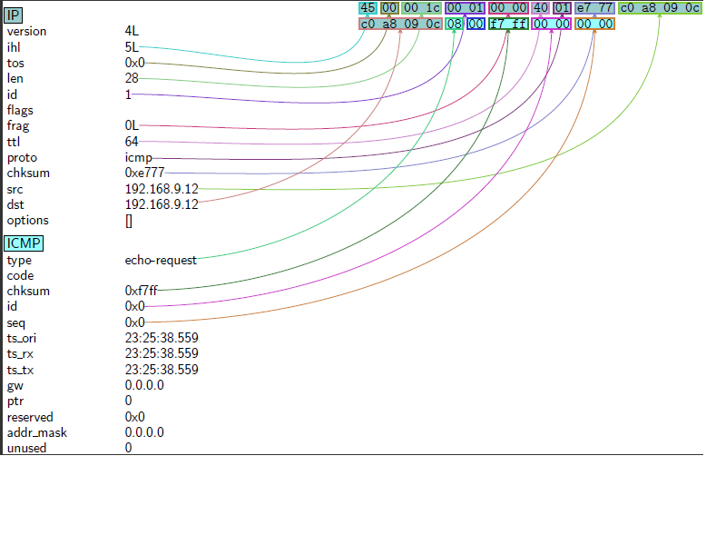
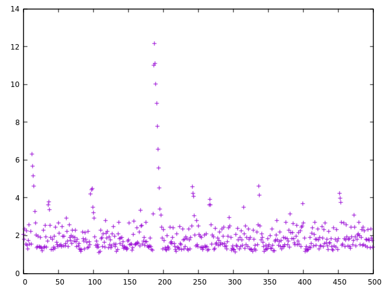

Scapy is a powerful interactive packet manipulation program. It is able to forge or decode packets of a wide number of protocols, send them on the wire, capture them, match requests and replies, and much more. It can easily handle most classical tasks like scanning, tracerouting, probing, unit tests, attacks or network discovery (it can replace hping, 85% of nmap, arpspoof, arp-sk, arping, tcpdump, tethereal, p0f, etc.). It also performs very well at a lot of other specific tasks that most other tools can’t handle, like sending invalid frames, injecting your own 802.11 frames, combining technics (VLAN hopping+ARP cache poisoning, VOIP decoding on WEP encrypted channel, …), etc.
Interactive tutorial
See interactive tutorial and the quick demo: an interactive session: http://www.secdev.org/projects/scapy/doc/usage.html#interactive-tutorial
Command line
# scapy
Welcome to Scapy (2.2.0)
>>>
Scapy Configuration File
>>> conf
ASN1_default_codec = <ASN1Codec BER[1]>
AS_resolver = <scapy.as_resolvers.AS_resolver_multi instance at 0x7fcc150574d0>
BTsocket = <BluetoothL2CAPSocket: read/write packets on a connected L2CAP ...
L2listen = <L2ListenSocket: read packets at layer 2 using Linux PF_PACKET ...
L2socket = <L2Socket: read/write packets at layer 2 using Linux PF_PACKET ...
L3socket = <L3PacketSocket: read/write packets at layer 3 using Linux PF_P...
auto_fragment = 1
checkIPID = 0
checkIPaddr = 1
checkIPsrc = 1
check_TCPerror_seqack = 0
color_theme = <DefaultTheme>
commands = arpcachepoison : Poison target's cache with (your MAC,victim's ...
debug_dissector = 0
debug_match = 0
default_l2 = <class 'scapy.packet.Raw'>
emph = <Emphasize []>
ethertypes = </etc/ethertypes/ >
except_filter = ''
extensions_paths = '.'
histfile = '/home/xxxx/.scapy_history'
iface = 'wlan0'
iface6 = 'lo'
interactive = True
interactive_shell = ''
ipv6_enabled = True
l2types = 0x1 <- Dot3 (802.3) 0x1 <-> Ether (Ethernet) 0xc -> IP (IP) 0x1...
l3types = 0x3 -> IP (IP) 0x800 <-> IP (IP) 0x806 <-> ARP (ARP) 0x86dd <->...
layers = Packet : None NoPayload : None Raw : Raw Padding : Padding ASN1...
load_layers = ['l2', 'inet', 'dhcp', 'dns', 'dot11', 'gprs', 'hsrp', 'inet6'...
logLevel = 20
manufdb = </usr/share/wireshark/wireshark/manuf/ >
mib = <MIB/ >
neighbor = Ether -> Dot1Q Ether -> IPv6 Ether -> IP Ether -> LLC Dot3 -> L...
netcache = arp_cache: 0 valid items. Timeout=120s in6_neighbor: 0 valid it...
noenum = <Resolve []>
padding = 1
prog = display = 'display' dot = 'dot' hexedit = 'hexer' pdfreader = '...
promisc = 1
prompt = '>>> '
protocols = </etc/protocols/ pim ip ax_25 esp tcp ah mpls_in_ip rohc ipv6_o...
raw_layer = <class 'scapy.packet.Raw'>
raw_summary = False
readfunc = None
resolve = <Resolve []>
route = Network Netmask Gateway Iface Output IP 127.0.0.0 255.0.0.0 0.0...
route6 = Destination Next Hop iface src candidates fe80::/64 :: wlan0 fe...
services_tcp = </etc/services-tcp/ kpop zabbix_trapper noclog svn cmip_man b...
services_udp = </etc/services-udp/ zabbix_trapper noclog cmip_man z3950 root...
session = ''
sniff_promisc = 1
stats_classic_protocols = [<class 'scapy.layers.inet.TCP'>, <class 'scapy.la...
stats_dot11_protocols = [<class 'scapy.layers.inet.TCP'>, <class 'scapy.laye...
stealth = 'not implemented'
temp_files = []
teredoPrefix = '2001::'
teredoServerPort = 3544
use_dnet = False
use_pcap = False
verb = 2
version = '2.2.0'
warning_threshold = 5
wepkey = ''
>>>
If we press twice Tab key we will see all the available functions
>>>
Display all 1299 possibilities? (y or n)
AES IP6ListField TFTP_Options
ARC2 IP6PrefixField TFTP_RRQ
ARC4 IPField TFTP_RRQ_server
ARP IPID_count TFTP_WRQ
ARPHDR_ETHER IPOption TFTP_WRQ_server
ARPHDR_LOOPBACK IPOption_Address_Extension TFTP_operations
ARPHDR_METRICOM IPOption_EOL TFTP_read
ARPHDR_PPP IPOption_LSRR TFTP_write
ARPHDR_TUN IPOption_MTU_Probe TabError
ARPSourceMACField IPOption_MTU_Reply TimeStampField
ARP_am IPOption_NOP TracerouteResult
ARPingResult IPOption_RR TracerouteResult6
ASN1Codec IPOption_Router_Alert True
ASN1F_BIT_STRING IPOption_SDBM TruncPktLenField
ASN1F_BOOLEAN IPOption_SSRR TypeError
ASN1F_CHOICE IPOption_Security UDP
ASN1F_ENUMERATED IPOption_Stream_Id UDP_SERVICES
ASN1F_GENERALIZED_TIME IPOption_Traceroute UDPerror
ASN1F_INTEGER IPPROTO_SCTP USER_CLASS_DATA
ASN1F_IPADDRESS IPPROTO_VRRP UTCTimeField
ASN1F_NULL IPTools UnboundLocalError
ASN1F_OID IPV6_ADDR_6TO4 UnicodeDecodeError
ASN1F_PACKET IPV6_ADDR_CAST_MASK UnicodeEncodeError
ASN1F_PRINTABLE_STRING IPV6_ADDR_GLOBAL UnicodeError
ASN1F_SEP IPV6_ADDR_LINKLOCAL UnicodeTranslateError
ASN1F_SEQUENCE IPV6_ADDR_LOOPBACK UnicodeWarning
ASN1F_SEQUENCE_OF IPV6_ADDR_MULTICAST UserWarning
ASN1F_SET IPV6_ADDR_SCOPE_MASK VENDOR_CLASS_DATA
ASN1F_SNMP_PDU_BULK IPV6_ADDR_SITELOCAL VENDOR_SPECIFIC_OPTION
ASN1F_SNMP_PDU_GET IPV6_ADDR_UNICAST VRRP
ASN1F_SNMP_PDU_INFORM IPV6_ADDR_UNSPECIFIED ValueError
ASN1F_SNMP_PDU_NEXT IP_PROTOS VolatileValue
ASN1F_SNMP_PDU_RESPONSE IPerror WINDOWS
ASN1F_SNMP_PDU_SET IPerror6 Warning
ASN1F_SNMP_PDU_TRAPv1 IPv6 WiFi_am
ASN1F_SNMP_PDU_TRAPv2 IPv6ExtHdrDestOpt X3BytesField
ASN1F_STRING IPv6ExtHdrFragment X509Cert
ASN1F_TIME_TICKS IPv6ExtHdrHopByHop X509RDN
ASN1F_UTC_TIME IPv6ExtHdrRouting X509v3Ext
ASN1F_X509_CONT0 IPv6inIP X86_64
ASN1F_X509_CONT1 IRT_DEFAULT XBitField
ASN1F_X509_CONT2 IRT_MINIMUM XByteField
ASN1F_X509_CONT3 ISAKMP XIntField
ASN1F_badsequence ISAKMPAttributeTypes XLongField
ASN1F_element ISAKMPTransformNum XOR
ASN1F_enum_INTEGER ISAKMPTransformSetField XShortEnumField
ASN1F_field ISAKMPTransformTypes XShortField
ASN1F_optionnal ISAKMP_class ZeroDivisionError
ASN1Tag ISAKMP_exchange_type ZuluTime
ASN1_BADTAG ISAKMP_payload __debug__
ASN1_BIT_STRING ISAKMP_payload_Hash __doc__
ASN1_BOOLEAN ISAKMP_payload_ID __file__
ASN1_BadTag_Decoding_Error ISAKMP_payload_KE __import__
ASN1_COUNTER32 ISAKMP_payload_Nonce __name__
ASN1_Class ISAKMP_payload_Proposal __package__
ASN1_Class_SNMP ISAKMP_payload_SA abs
ASN1_Class_UNIVERSAL ISAKMP_payload_Transform addr
ASN1_Class_X509 ISAKMP_payload_VendorID airpwn
ASN1_Class_metaclass ISAKMP_payload_type all
ASN1_Codecs ISAKMP_payload_type_overload any
ASN1_Codecs_metaclass ImportError apply
ASN1_DECODING_ERROR ImportWarning arch
ASN1_Decoding_Error IncrementalValue arpcachepoison
ASN1_ENUMERATED IndentationError arping
ASN1_Encoding_Error IndexError array
ASN1_Error IntAutoTime atol
ASN1_GAUGE32 IntEnumField attach_filter
ASN1_GENERALIZED_TIME IntField autorun_commands
ASN1_IA5_STRING Interceptor autorun_get_ansi_interactive_session
ASN1_INTEGER IrLAPCommand autorun_get_html_interactive_session
ASN1_IPADDRESS IrLAPHead autorun_get_interactive_session
ASN1_NULL IrLMP autorun_get_latex_interactive_session
ASN1_NUMERIC_STRING Jumbo autorun_get_text_interactive_session
ASN1_OID Key base_classes
ASN1_Object KeyError basestring
ASN1_Object_metaclass KeyboardInterrupt bastatus
ASN1_PRINTABLE_STRING KnowledgeBase bin
ASN1_Packet L2CAP_CmdHdr bind_bottom_up
ASN1_SEP L2CAP_CmdRej bind_layers
ASN1_SEQUENCE L2CAP_ConfReq bind_top_down
ASN1_SET L2CAP_ConfResp bool
ASN1_SNMP_PDU_BULK L2CAP_ConnReq bootpd
ASN1_SNMP_PDU_GET L2CAP_ConnResp buffer
ASN1_SNMP_PDU_INFORM L2CAP_DisconnReq bytearray
ASN1_SNMP_PDU_NEXT L2CAP_DisconnResp bytes
ASN1_SNMP_PDU_RESPONSE L2CAP_Hdr cPickle
ASN1_SNMP_PDU_SET L2CAP_InfoReq callable
ASN1_SNMP_PDU_TRAPv1 L2CAP_InfoResp capability_list
ASN1_SNMP_PDU_TRAPv2 L2ListenSocket cert
ASN1_STRING L2Socket checksum
ASN1_T61_STRING L2TP chexdump
ASN1_TIME_TICKS L3PacketSocket chr
ASN1_UTC_TIME L3RawSocket classmethod
ASN1_VIDEOTEX_STRING L3RawSocket6 cmp
ASN1_X509_CONT0 LEFieldLenField code
ASN1_X509_CONT1 LEIntEnumField coerce
ASN1_X509_CONT2 LEIntField colgen
ASN1_X509_CONT3 LELongField compile
ASN1_force LEShortEnumField complex
AS_resolver LEShortField computeNIGroupAddr
AS_resolver6 LESignedIntField conf
AS_resolver_cymru LINUX config
AS_resolver_multi LLC console_handler
AS_resolver_radb LLMNRQuery construct_source_candidate_set
AS_resolver_riswhois LLMNRResponse copy
ATMT LOOPBACK_NAME copyright
ActionField LatexTheme corrupt_bits
All_DHCP_Relay_Agents_and_Servers LatexTheme2 corrupt_bytes
All_DHCP_Servers LayersList crc32
AnsiColorTheme LenField crc32c
AnsweringMachine LifetimeField crc32c_table
ArithmeticError LogLevel create_ca_file
AssertionError LongField create_styler
AttributeError LookupError create_temporary_ca_file
AutoTime MACField create_temporary_ca_path
Automaton MANUFDB credits
Automaton_metaclass MAX_CERT_SIZE debug
BCDFloatField MAX_CRL_SIZE defaultdict
BER_BadTag_Decoding_Error MAX_KEY_SIZE defrag
BER_Decoding_Error MD2 defragment
BER_Encoding_Error MD4 defragment6
BER_Exception MD5 delattr
BER_len_dec MGCP deque
BER_len_enc MIBDict dhcp6_cls_by_type
BER_num_dec MIP6MH_BA dhcp6opts
BER_num_enc MIP6MH_BE dhcp6opts_by_code
BERcodec_BIT_STRING MIP6MH_BRR dhcp6statuscodes
BERcodec_BOOLEAN MIP6MH_BU dhcp6types
BERcodec_COUNTER32 MIP6MH_CoT dhcp_request
BERcodec_ENUMERATED MIP6MH_CoTI dhcpd
BERcodec_GAUGE32 MIP6MH_Generic dhcpmagic
BERcodec_GENERALIZED_TIME MIP6MH_HoT dict
BERcodec_IA5_STRING MIP6MH_HoTI dir
BERcodec_INTEGER MIP6OptAltCoA divmod
BERcodec_IPADDRESS MIP6OptBRAdvice dns_spoof
BERcodec_NULL MIP6OptBindingAuthData dnsclasses
BERcodec_NUMERIC_STRING MIP6OptCGAParams dnsqtypes
BERcodec_OID MIP6OptCGAParamsReq dnsrepr2names
BERcodec_Object MIP6OptCareOfTest dnstypes
BERcodec_PRINTABLE_STRING MIP6OptCareOfTestInit do_graph
BERcodec_SEP MIP6OptHomeKeygenToken duid_cls
BERcodec_SEQUENCE MIP6OptLLAddr duidhwtypes
BERcodec_SET MIP6OptMNID duidtypes
BERcodec_SNMP_PDU_BULK MIP6OptMobNetPrefix dyndns_add
BERcodec_SNMP_PDU_GET MIP6OptMsgAuth dyndns_del
BERcodec_SNMP_PDU_INFORM MIP6OptNonceIndices enumerate
BERcodec_SNMP_PDU_NEXT MIP6OptReplayProtection error
BERcodec_SNMP_PDU_RESPONSE MIP6OptSignature etherleak
BERcodec_SNMP_PDU_SET MIP6OptUnknown eval
BERcodec_SNMP_PDU_TRAPv1 MTU execfile
BERcodec_SNMP_PDU_TRAPv2 ManufDA exit
BERcodec_STRING MemoryError export_object
BERcodec_T61_STRING Message farpd
BERcodec_TIME_TICKS MobileIP file
BERcodec_UTC_TIME MobileIPRRP filter
BERcodec_VIDEOTEX_STRING MobileIPRRQ find_ifaddr2
BERcodec_X509_CONT0 MobileIPTunnelData fixname
BERcodec_X509_CONT1 MultiEnumField float
BERcodec_X509_CONT2 NBNSNodeStatusResponse format
BERcodec_X509_CONT3 NBNSNodeStatusResponseEnd fragleak
BERcodec_metaclass NBNSNodeStatusResponseService fragleak2
BOOTP NBNSQueryRequest fragment
BOOTP_am NBNSQueryResponse fragment6
BaseException NBNSQueryResponseNegative frozenset
BasePacket NBNSRequest fuzz
BasePacketList NBNSWackResponse generators
BitEnumField NBTDatagram get_cls
BitField NBTSession get_if
BitFieldLenField NETBSD get_if_addr
BitMultiEnumField NIQueryCodeField get_if_hwaddr
BlackAndWhite NIQueryDataField get_if_index
Blowfish NIReplyDataField get_if_list
BluetoothHCISocket NTP get_if_raw_addr
BluetoothL2CAPSocket NTPTimestampField get_if_raw_addr6
BrightTheme NameError get_if_raw_hwaddr
BufferError Neighbor get_last_packet_timestamp
ByteEnumField Net get_source_addr_from_candidate_set
ByteField Net6 get_temp_file
BytesWarning NetBIOSNameField get_toDS
CAST NetBIOS_DS get_working_if
CRL NetCache getattr
CacheInstance NetflowHeader getmacbyip
Cert NetflowHeaderV1 getmacbyip6
CharEnumField NetflowRecordV1 glob
ChunkParamField NewDefaultValues globals
Color NoPayload gw
ColorOnBlackTheme NoTheme gzip
ColorPrompt NonceField hasattr
ColorTheme None hash
CommandsList NotImplemented hashlib
ConditionalField NotImplementedError help
Conf Num2Layer hex
ConfClass OByteField hexdiff
ConfigFieldList OID hexdump
CookedLinux OPENBSD hexedit
CorruptedBits OSError hexstr
CorruptedBytes OSSLHelper hmac
Crypto ObjectPipe iana_enterprise_num
DADict OverflowError icmp6_niqtypes
DADict_Exception PACKET_ADD_MEMBERSHIP icmp6ndopts
DARWIN PACKET_DROP_MEMBERSHIP icmp6ndoptscls
DEFAULT_PRESTART_FILE PACKET_MR_ALLMULTI icmp6types
DEFAULT_STARTUP_FILE PACKET_MR_MULTICAST icmp6typescls
DES PACKET_MR_PROMISC icmpcodes
DES3 PACKET_RECV_OUTPUT icmptypes
DHCP PACKET_RX_RING id
DHCP6 PACKET_STATISTICS iff
DHCP6ClientIAID PKCS1_OAEP ikescan
DHCP6ClientIA_NA PKCS1_v1_5 import_hexcap
DHCP6ClientIA_TA PPI import_object
DHCP6ClientUnicastAddr PPP in6_6to4ExtractAddr
DHCP6CurrentTransactionID PPP_ECP in6_addrtomac
DHCP6OptAuth PPP_ECP_Option in6_addrtovendor
DHCP6OptBCMCSDomains PPP_ECP_Option_OUI in6_and
DHCP6OptBCMCSServers PPP_IPCP in6_chksum
DHCP6OptClientFQDN PPP_IPCP_Option in6_cidr2mask
DHCP6OptClientId PPP_IPCP_Option_DNS1 in6_ctop
DHCP6OptDNSDomains PPP_IPCP_Option_DNS2 in6_get6to4Prefix
DHCP6OptDNSServers PPP_IPCP_Option_IPAddress in6_getAddrType
DHCP6OptElapsedTime PPP_IPCP_Option_NBNS1 in6_getLinkScopedMcastAddr
DHCP6OptGeoConf PPP_IPCP_Option_NBNS2 in6_getLocalUniquePrefix
DHCP6OptIAAddress PPPoE in6_getRandomizedIfaceId
DHCP6OptIAPrefix PPPoED in6_get_common_plen
DHCP6OptIA_NA PYX in6_getha
DHCP6OptIA_PD Packet in6_getifaddr
DHCP6OptIA_TA PacketField in6_getnsma
DHCP6OptIfaceId PacketLenField in6_getnsmac
DHCP6OptInfoRefreshTime PacketList in6_getscope
DHCP6OptNISDomain PacketListField in6_ifaceidtomac
DHCP6OptNISPDomain Packet_metaclass in6_isaddr6to4
DHCP6OptNISPServers Pad1 in6_isaddrTeredo
DHCP6OptNISServers PadField in6_isaddrllallnodes
DHCP6OptOptReq PadN in6_isaddrllallservers
DHCP6OptPref Padding in6_isanycast
DHCP6OptRapidCommit PcapReader in6_isdocaddr
DHCP6OptReconfAccept PcapWriter in6_iseui64
DHCP6OptReconfMsg PendingDeprecationWarning in6_isgladdr
DHCP6OptRelayAgentERO PrismHeader in6_isincluded
DHCP6OptRelayMsg ProgPath in6_islladdr
DHCP6OptRemoteID PseudoIPv6 in6_ismaddr
DHCP6OptSIPDomains PubKey in6_ismgladdr
DHCP6OptSIPServers RDLenField in6_ismlladdr
DHCP6OptSNTPServers RDataField in6_ismnladdr
DHCP6OptServerId RIP in6_ismsladdr
DHCP6OptServerUnicast RIPAuth in6_issladdr
DHCP6OptStatusCode RIPEMD in6_isuladdr
DHCP6OptSubscriberID RIPEntry in6_mactoifaceid
DHCP6OptUnknown RSA in6_or
DHCP6OptUserClass RTF_REJECT in6_ptoc
DHCP6OptVendorClass RTF_UP in6_ptop
DHCP6OptVendorSpecificInfo RTP in6_xor
DHCP6PrefVal RadioTap incremental_label
DHCP6RelayAgentUnicastAddr Radius inet_aton
DHCP6RelayHopCount RandASN1Object inet_ntoa
DHCP6ServerDUID RandBin inet_ntop
DHCP6ServerUnicastAddr RandByte inet_pton
DHCP6_Advertise RandChoice input
DHCP6_Confirm RandDHCPOptions int
DHCP6_Decline RandEnum interact
DHCP6_InfoRequest RandEnumByte intern
DHCP6_Rebind RandEnumInt ioctl
DHCP6_Reconf RandEnumLong ipv6nh
DHCP6_RelayForward RandEnumSByte ipv6nhcls
DHCP6_RelayReply RandEnumSInt is_promisc
DHCP6_Release RandEnumSLong isinstance
DHCP6_Renew RandEnumSShort issubclass
DHCP6_Reply RandEnumShort iter
DHCP6_Request RandField itertools
DHCP6_Solicit RandIP itom
DHCPOptions RandIP6 len
DHCPOptionsField RandInt lhex
DHCPRevOptions RandLong license
DHCPTypes RandMAC linehexdump
DHCP_am RandNum linux
DHCPv6_am RandNumExpo list
DNS RandNumGamma list_contrib
DNSQR RandNumGauss load_contrib
DNSQRField RandOID load_ethertypes
DNSRR RandPool load_layer
DNSRRCountField RandRegExp load_manuf
DNSRRField RandSByte load_mib
DNSStrField RandSInt load_module
DNS_am RandSLong load_object
DNSgetstr RandSShort load_protocols
DSA RandShort load_services
DUID_EN RandSingByte load_session
DUID_LL RandSingInt locals
DUID_LLT RandSingLong log
DefaultTheme RandSingNum log_interactive
DelayedEval RandSingSByte log_loading
DeprecationWarning RandSingSInt log_runtime
DestMACField RandSingSLong log_scapy
DomainNameField RandSingSShort logging
DomainNameListField RandSingShort long
Dot11 RandSingString ls
Dot11ATIM RandSingularity lsc
Dot11Addr2MACField RandString ltoa
Dot11Addr3MACField RandTermString mac2str
Dot11Addr4MACField RandomEnumeration make_lined_table
Dot11AddrMACField RastaTheme make_table
Dot11AssoReq Raw make_tex_table
Dot11AssoResp RawPcapReader map
Dot11Auth RawPcapWriter math
Dot11Beacon RawVal max
Dot11Deauth ReferenceAM memoryview
Dot11Disas ReferenceError mhtypes
Dot11Elt Resolve mib_register
Dot11PacketList Route min
Dot11ProbeReq Route6 moboptcls
Dot11ProbeResp RouterAlert names2dnsrepr
Dot11QoS RuntimeError neighsol
Dot11ReassoReq RuntimeWarning new
Dot11ReassoResp SCTP next
Dot11SCField SCTPChunkAbort object
Dot11WEP SCTPChunkCookieAck oct
Dot1Q SCTPChunkCookieEcho open
Dot3 SCTPChunkData ord
EAP SCTPChunkError os
EAPOL SCTPChunkHeartbeatAck overlap_frag
EOFError SCTPChunkHeartbeatReq packet
ETHER_ANY SCTPChunkInit pkcs_emsa_pkcs1_v1_5_encode
ETHER_BROADCAST SCTPChunkInitAck pkcs_emsa_pss_encode
ETHER_TYPES SCTPChunkParamAdaptationLayer pkcs_emsa_pss_verify
ETH_P_ALL SCTPChunkParamCookiePreservative pkcs_i2osp
ETH_P_ARP SCTPChunkParamECNCapable pkcs_mgf1
ETH_P_IP SCTPChunkParamFwdTSN pkcs_os2ip
ETH_P_IPV6 SCTPChunkParamHearbeatInfo plist
ElGamal SCTPChunkParamHostname plst
Ellipsis SCTPChunkParamIPv4Addr popen2
Emph SCTPChunkParamIPv6Addr pow
Emphasize SCTPChunkParamStateCookie print
EnumElement SCTPChunkParamSupportedAddrTypes print_chain
EnumField SCTPChunkParamUnrocognizedParam promiscping
Enum_metaclass SCTPChunkSACK property
EnvironmentError SCTPChunkShutdown quit
Ether SCTPChunkShutdownAck random
Exception SCTPChunkShutdownComplete randstring
FREEBSD SHA range
False SHA224 raw_input
Field SHA256 rdpcap
FieldLenField SHA384 re
FieldListField SHA512 re_extract_hexcap
FixedPointField SIOCGIFADDR read_routes
FlagsField SIOCGIFCONF read_routes6
FloatingPointError SIOCGIFCOUNT reason_code
FormatTheme SIOCGIFFLAGS reduce
FutureWarning SIOCGIFHWADDR reload
GNUPLOT SIOCGIFINDEX report_ports
GPRS SIOCGIFNAME repr
GRE SIOCGIFNETMASK reversed
GRErouting SIOCGSTAMP round
GapAckField SIOCSIFFLAGS sane
Gen SIOCSIFLINK sane_color
GeneratorExit SMBMailSlot save_object
HAO SMBNegociate_Protocol_Request_Header save_session
HAS_HASHLIB SMBNegociate_Protocol_Request_Tail scapy
HBHOptUnknown SMBNegociate_Protocol_Response_Advanced_Security scapy_delete_temp_files
HCI_ACL_Hdr SMBNegociate_Protocol_Response_No_Security scapy_session
HCI_Hdr SMBNegociate_Protocol_Response_No_Security_No_Key scapy_write_history_file
HDLC SMBNetlogon_Protocol_Response_Header sctpchunkparamtypes
HMAC SMBNetlogon_Protocol_Response_Tail_LM20 sctpchunkparamtypescls
HSRP SMBNetlogon_Protocol_Response_Tail_SAM sctpchunktypes
HTMLTheme SMBSession_Setup_AndX_Request sctpchunktypescls
HTMLTheme2 SMBSession_Setup_AndX_Response select
ICMP SNAP send
ICMPTimeStampField SNMP sendp
ICMPerror SNMP_error sendpfast
ICMPv6DestUnreach SNMP_trap_types sendrecv
ICMPv6EchoReply SNMPbulk session
ICMPv6EchoRequest SNMPget set
ICMPv6HAADReply SNMPinform set_promisc
ICMPv6HAADRequest SNMPnext setattr
ICMPv6MLDone SNMPresponse sha
ICMPv6MLQuery SNMPset skinny_messages
ICMPv6MLReport SNMPtrapv1 slice
ICMPv6MPAdv SNMPtrapv2 sndrcv
ICMPv6MPSol SNMPvarbind sndrcvflood
ICMPv6MRD_Advertisement SOLARIS sniff
ICMPv6MRD_Solicitation SOL_PACKET snmpwalk
ICMPv6MRD_Termination SOL_SOCKET socket
ICMPv6NDOptAdvInterval SO_ATTACH_FILTER sorted
ICMPv6NDOptDstLLAddr STP split_bottom_up
ICMPv6NDOptEFA ScapyAutorunInterpreter split_layers
ICMPv6NDOptHAInfo ScapyFreqFilter split_top_down
ICMPv6NDOptIPAddr Scapy_Exception sr
ICMPv6NDOptLLA SebekHead sr1
ICMPv6NDOptMAP SebekV1 srbt
ICMPv6NDOptMTU SebekV2 srbt1
ICMPv6NDOptNewRtrPrefix SebekV2Sock srflood
ICMPv6NDOptPrefixInfo SebekV3 srloop
ICMPv6NDOptRDNSS SebekV3Sock srp
ICMPv6NDOptRedirectedHdr SetGen srp1
ICMPv6NDOptRouteInfo ShortEnumField srpflood
ICMPv6NDOptShortcutLimit ShortField srploop
ICMPv6NDOptSrcAddrList SignedIntEnumField staticmethod
ICMPv6NDOptSrcLLAddr SignedIntField status_code
ICMPv6NDOptTgtAddrList SimpleSocket str
ICMPv6NDOptUnknown Skinny str2mac
ICMPv6ND_INDAdv SndRcvList strand
ICMPv6ND_INDSol SourceIP6Field string
ICMPv6ND_NA SourceIPField struct
ICMPv6ND_NS SourceMACField strxor
ICMPv6ND_RA StandardError subprocess
ICMPv6ND_RS StopAutorun sum
ICMPv6ND_Redirect StopIteration super
ICMPv6NIQueryIPv4 StrField sys
ICMPv6NIQueryIPv6 StrFixedLenEnumField tempfile
ICMPv6NIQueryNOOP StrFixedLenField teredoAddrExtractInfo
ICMPv6NIQueryName StrLenField tex_escape
ICMPv6NIReplyIPv4 StrNullField themes
ICMPv6NIReplyIPv6 StrStopField thread
ICMPv6NIReplyNOOP StreamSocket time
ICMPv6NIReplyName SuperSocket traceback
ICMPv6NIReplyRefuse SyntaxError traceroute
ICMPv6NIReplyUnknown SyntaxWarning traceroute6
ICMPv6PacketTooBig SystemError tshark
ICMPv6ParamProblem SystemExit tuple
ICMPv6TimeExceeded T1 type
ICMPv6Unknown T2 types
IEEEDoubleField TCP unichr
IEEEFloatField TCPDUMP unicode
IFF_BROADCAST TCPOptions update_session
IFF_DEBUG TCPOptionsField utils
IFF_LOOPBACK TCP_SERVICES vars
IFF_NOARP TCP_client warning
IFF_NOTRAILERS TCPerror warnings
IFF_POINTOPOINT TFTP wireshark
IFF_PROMISC TFTP_ACK with_statement
IFF_RUNNING TFTP_DATA wrpcap
IFF_UP TFTP_ERROR xrange
IOError TFTP_Error_Codes zerofree_randstring
IP TFTP_OACK zip
IP6Field TFTP_Option zlib
>>>
Built-in Functions and help
>>> ls()
ARP : ARP
ASN1_Packet : None
BOOTP : BOOTP
CookedLinux : cooked linux
DHCP : DHCP options
DHCP6 : DHCPv6 Generic Message)
DHCP6OptAuth : DHCP6 Option - Authentication
...
>>> lsc()
arpcachepoison : Poison target's cache with (your MAC,victim's IP) couple
arping : Send ARP who-has requests to determine which hosts are up
bind_layers : Bind 2 layers on some specific fields' values
corrupt_bits : Flip a given percentage or number of bits from a string
corrupt_bytes : Corrupt a given percentage or number of bytes from a string
defrag : defrag(plist) -> ([not fragmented], [defragmented],
defragment : defrag(plist) -> plist defragmented as much as possible
dyndns_add : Send a DNS add message to a nameserver for "name" to have a new "rdata"
dyndns_del : Send a DNS delete message to a nameserver for "name"
etherleak : Exploit Etherleak flaw
fragment : Fragment a big IP datagram
fuzz : Transform a layer into a fuzzy layer by replacing some default values by random objects
getmacbyip : Return MAC address corresponding to a given IP address
hexdiff : Show differences between 2 binary strings
hexdump : --
hexedit : --
is_promisc : Try to guess if target is in Promisc mode. The target is provided by its ip.
linehexdump : --
ls : List available layers, or infos on a given layer
promiscping : Send ARP who-has requests to determine which hosts are in promiscuous mode
rdpcap : Read a pcap file and return a packet list
send : Send packets at layer 3
sendp : Send packets at layer 2
sendpfast : Send packets at layer 2 using tcpreplay for performance
sniff : Sniff packets
split_layers : Split 2 layers previously bound
sr : Send and receive packets at layer 3
sr1 : Send packets at layer 3 and return only the first answer
srbt : send and receive using a bluetooth socket
srbt1 : send and receive 1 packet using a bluetooth socket
srflood : Flood and receive packets at layer 3
srloop : Send a packet at layer 3 in loop and print the answer each time
srp : Send and receive packets at layer 2
srp1 : Send and receive packets at layer 2 and return only the first answer
srpflood : Flood and receive packets at layer 2
srploop : Send a packet at layer 2 in loop and print the answer each time
traceroute : Instant TCP traceroute
tshark : Sniff packets and print them calling pkt.show(), a bit like text wireshark
wireshark : Run wireshark on a list of packets
wrpcap : Write a list of packets to a pcap file
If it is needed to know the details for a certain function we can use help()
>>> help(arpcachepoison)
Help on function arpcachepoison in module scapy.layers.l2:
arpcachepoison(target, victim, interval=60)
Poison target's cache with (your MAC,victim's IP) couple
arpcachepoison(target, victim, [interval=60]) -> None
Check layer fields
>>> ls(UDP)
sport : ShortEnumField = (53)
dport : ShortEnumField = (53)
len : ShortField = (None)
chksum : XShortField = (None)
>>> ls(IP)
version : BitField = (4)
ihl : BitField = (None)
tos : XByteField = (0)
len : ShortField = (None)
id : ShortField = (1)
flags : FlagsField = (0)
frag : BitField = (0)
ttl : ByteField = (64)
proto : ByteEnumField = (0)
chksum : XShortField = (None)
src : Emph = (None)
dst : Emph = ('127.0.0.1')
options : PacketListField = ([])
Check layer information
>>> ip = IP()
>>> ip.show2()
###[ IP ]###
version= 4L
ihl= 5L
tos= 0x0
len= 20
id= 1
flags=
frag= 0L
ttl= 64
proto= hopopt
chksum= 0x7ce7
src= 127.0.0.1
dst= 127.0.0.1
\options\
Check layer params
>>> udp=UDP()
>>> udp.show()
###[ UDP ]###
sport= domain
dport= domain
len= None
chksum= None
>>> udp.dport=5060
>>> udp.show()
###[ UDP ]###
sport= domain
dport= sip
len= None
chksum= None
Binary information
>>> ip.tos = 0xA
>>> ip.show()
###[ IP ]###
version= 4
ihl= None
tos= 0xa
len= None
id= 1
flags=
frag= 0
ttl= 64
proto= hopopt
chksum= None
src= 127.0.0.1
dst= 127.0.0.1
\options\
Build a packet and show packet info
>>> a=IP(ttl=10)
>>> a
< IP ttl=10 |>
>>> a.src
’127.0.0.1’
>>> a.dst="192.168.1.1"
>>> a
< IP ttl=10 dst=192.168.1.1 |>
>>> a.src
’192.168.1.14’
>>> del(a.ttl)
>>> a
< IP dst=192.168.1.1 |>
>>> a.ttl
64
ICMP Packet
>>> packet=IP(dst="192.168.1.1-254")/ICMP()
>>> str(packet)
'E\x00\x00\x1c\x00\x01\x00\x00@\x01\xef\x82\xc0\xa8\t\x0c\xc0\xa8\x01\x01\x08\x00\xf7\xff\x00\x00\x00\x00'
>>> packet.show()
###[ IP ]###
version= 4
ihl= None
tos= 0x0
len= None
id= 1
flags=
frag= 0
ttl= 64
proto= icmp
chksum= None
src= 192.168.1.12
dst= Net('192.168.1.1-254')
\options\
###[ ICMP ]###
type= echo-request
code= 0
chksum= None
id= 0x0
seq= 0x0
HTTP GET Packet
>>> packet=Ether()/IP(dst="www.google.com")/TCP()/"GET /index.html HTTP/1.1"
>>> hexdump(packet)
0000 C0 3E 0F D2 24 DC 68 A3 C4 F0 D6 CE 08 00 45 00 .>..$.h.......E.
0010 00 40 00 01 00 00 40 06 54 81 C0 A8 09 0C C1 5F .@....@.T......_
0020 9B 22 00 14 00 50 00 00 00 00 00 00 00 00 50 02 ."...P........P.
0030 20 00 C1 87 00 00 47 45 54 20 2F 69 6E 64 65 78 .....GET /index
0040 2E 68 74 6D 6C 20 48 54 54 50 2F 31 2E 31 .html HTTP/1.1
>>> packet.show()
###[ Ethernet ]###
dst= c0:3e:0f:d2:24:dc
src= 68:a3:c4:f0:d6:ce
type= 0x800
###[ IP ]###
version= 4
ihl= None
tos= 0x0
len= None
id= 1
flags=
frag= 0
ttl= 64
proto= tcp
chksum= None
src= 192.168.9.12
dst= Net('www.google.com')
\options\
###[ TCP ]###
sport= ftp_data
dport= http
seq= 0
ack= 0
dataofs= None
reserved= 0
flags= S
window= 8192
chksum= None
urgptr= 0
options= {}
###[ Raw ]###
load= 'GET /index.html HTTP/1.1'
Traceroute
>>> traceroute('www.google.com')
Begin emission:
*********************Finished to send 30 packets.
*********
Received 30 packets, got 30 answers, remaining 0 packets
193.95.155.23:tcp80
1 192.168.9.1 11
2 193.95.131.7 11
3 193.95.138.1 11
4 193.95.153.26 SA
5 193.95.153.26 SA
6 193.95.153.26 SA
...
(<Traceroute: TCP:27 UDP:0 ICMP:3 Other:0>, <Unanswered: TCP:0 UDP:0 ICMP:0 Other:0>)
ARPing
>>> arping('192.168.9.1')
Begin emission:
Finished to send 1 packets.
*
Received 1 packets, got 1 answers, remaining 0 packets
c0:1e:af:d2:34:bc 192.168.1.1
(<ARPing: TCP:0 UDP:0 ICMP:0 Other:1>, <Unanswered: TCP:0 UDP:0 ICMP:0 Other:0>)
Packet manipulation
Generating sets of packets
>>> packet=IP(dst="192.168.9.1/30")
>>> packet
<IP dst=Net('192.168.9.1/30') |>
>>> [p for p in packet]
[<IP dst=192.168.9.0 |>, <IP dst=192.168.9.1 |>, <IP dst=192.168.9.2 |>, <IP dst=192.168.9.3 |>]
>>> ttl_packet=IP(ttl=[1,2,(5,9)])
>>> ttl_packet
<IP ttl=[1, 2, (5, 9)] |>
>>> tcp_port=TCP(dport=[80,443])
>>> tcp_port
<TCP dport=['http', 'https'] |>
>>> [p for p in packet/tcp_port]
[<IP frag=0 proto=tcp dst=192.168.9.0 |<TCP dport=http |>>, <IP frag=0 proto=tcp dst=192.168.9.0 |<TCP dport=https |>>, <IP frag=0 proto=tcp dst=192.168.9.1 |<TCP dport=http |>>, <IP frag=0 proto=tcp dst=192.168.9.1 |<TCP dport=https |>>, <IP frag=0 proto=tcp dst=192.168.9.2 |<TCP dport=http |>>, <IP frag=0 proto=tcp dst=192.168.9.2 |<TCP dport=https |>>, <IP frag=0 proto=tcp dst=192.168.9.3 |<TCP dport=http |>>, <IP frag=0 proto=tcp dst=192.168.9.3 |<TCP dport=https |>>]
>>>
sprintf example
>>> packet=IP(dst="192.168.9.1",ttl=12)/UDP(dport=123)
>>> packet
<IP frag=0 ttl=12 proto=udp dst=192.168.9.1 |<UDP dport=ntp |>>
>>> packet.sprintf("The source is %IP.src%")
'The source is 192.168.9.12'
The next packet contains a single SYN packet to 192.168.9.1 port 80
>>> packet=IP(dst="192.168.9.1")/TCP(dport=80,flags="S")
>>> packet
<IP frag=0 proto=tcp dst=192.168.9.1 |<TCP dport=http flags=S |>>
Sending packets
difference between send() and sendp()
send() function will send packets at layer 3. It will handle routing and layer 2 for you.
>>> send(IP(dst="192.168.1.1")/ICMP())
sendp() function will work at layer 2. Can be used the selected “or not” interface and link layer protocol.
>>> sendp(Ether()/IP(dst="192.168.1.1",ttl=(1,4)), iface="eth0")
ICMP
>>> packet=IP(dst="192.168.1.1-254")/ICMP()
>>> packet.show()
###[ IP ]###
version= 4
ihl= None
tos= 0x0
len= None
id= 1
flags=
frag= 0
ttl= 64
proto= icmp
chksum= None
src= 192.168.1.12
dst= Net('192.168.1.1-254')
\options\
###[ ICMP ]###
type= echo-request
code= 0
chksum= None
id= 0x0
seq= 0x0
>>> send(packet)
..............................................................................................................................................................................................................................................................
Sent 254 packets.
>>>
>>> send(IP(dst="192.168.1.1-254")/ICMP())
..............................................................................................................................................................................................................................................................
Sent 254 packets.
>>>
TCP/IP layers
>>> IP()
<IP |>
>>> IP()/TCP()
<IP frag=0 proto=tcp |<TCP |>>
>>> Ether()/IP()/TCP()
<Ether type=0x800 |<IP frag=0 proto=tcp |<TCP |>>>
Sending a TCP (HTTP) packet
>>> packet=Ether()/IP(dst="www.cisco.com")/TCP(dport=80)/"GET / HTTP/1.1"
>>> sendp(packet)
.
Sent 1 packets.
Send and receive packets: the sr() functions
With send and sendp send functions we can send the information we need to the network, but we can not receive or handle the answers.
We can use the sr() functions:
- sr(): Send and receive a package (in layer 3, so use the system routes), and wait until a response has been received to all packets sent.
- sr1(): Like the sr() function but only captures the first response received ignoring the rest of them.
- srp(): Like the sr() function but in layer 2, we can send the information through an specific network card (is not needed a route).
- srp1(): Like the function sr1() but in layer 2.
- srbt(): Sends information through a Bluetooth connection.
- srloop(): Let us send and receive information N times, where we can specify actions to take when a package is received and or the response is not received.
- srploop(): Like the srloop() function but works on layer 2.
Packet sent:
>>> packets=sr(IP(dst="192.168.9.1")/ICMP(seq=[x for x in range(20)]))
Begin emission:
******************Finished to send 20 packets.
**
Received 20 packets, got 20 answers, remaining 0 packets
>>> packets
(<Results: TCP:0 UDP:0 ICMP:20 Other:0>, <Unanswered: TCP:0 UDP:0 ICMP:0 Other:0>)
Print Answers:
>>> answer_received=packets[0]
>>> answer_received
<Results: TCP:0 UDP:0 ICMP:20 Other:0>
>>> answer_received[0]
(<IP frag=0 proto=icmp dst=192.168.9.1 |<ICMP seq=0x0 |>>, <IP version=4L ihl=5L tos=0x0 len=28 id=8140 flags= frag=0L ttl=64 proto=icmp chksum=0xc7b7 src=192.168.9.1 dst=192.168.9.12 options=[] |<ICMP type=echo-reply code=0 chksum=0xffff id=0x0 seq=0x0 |>>)
>>> for p in answer_received:
... print p
...
(<IP frag=0 proto=icmp dst=192.168.9.1 |<ICMP seq=0x0 |>>, <IP version=4L ihl=5L tos=0x0 len=28 id=8140 flags= frag=0L ttl=64 proto=icmp chksum=0xc7b7 src=192.168.9.1 dst=192.168.9.12 options=[] |<ICMP type=echo-reply code=0 chksum=0xffff id=0x0 seq=0x0 |>>)
(<IP frag=0 proto=icmp dst=192.168.9.1 |<ICMP seq=0x1 |>>, <IP version=4L ihl=5L tos=0x0 len=28 id=8141 flags= frag=0L ttl=64 proto=icmp chksum=0xc7b6 src=192.168.9.1 dst=192.168.9.12 options=[] |<ICMP type=echo-reply code=0 chksum=0xfffe id=0x0 seq=0x1 |>>)
(<IP frag=0 proto=icmp dst=192.168.9.1 |<ICMP seq=0x2 |>>, <IP version=4L ihl=5L tos=0x0 len=28 id=8142 flags= frag=0L ttl=64 proto=icmp chksum=0xc7b5 src=192.168.9.1 dst=192.168.9.12 options=[] |<ICMP type=echo-reply code=0 chksum=0xfffd id=0x0 seq=0x2 |>>)
...
>>> list_answer_received=list(answer_received)
>>> list_answer_received
[(<IP frag=0 proto=icmp dst=192.168.9.1 |<ICMP seq=0x0 |>>, <IP version=4L ihl=5L tos=0x0 len=28 id=8140 flags= frag=0L ttl=64 proto=icmp chksum=0xc7b7 src=192.168.9.1 dst=192.168.9.12 options=[] |<ICMP type=echo-reply code=0 chksum=0xffff id=0x0 seq=0x0 |>>), (<IP frag=0 proto=icmp dst=192.168.9.1 |<ICMP seq=0x1 |>>, <IP version=4L ihl=5L tos=0x0 len=28 id=8141 flags= frag=0L ttl=64 proto=icmp chksum=0xc7b6 src=192.168.9.1 dst=192.168.9.12 options=[] |<ICMP type=echo-reply code=0 chksum=0xfffe id=0x0 seq=0x1 |>>), (<IP frag=0 proto=icmp dst=192.168.9.1 |<ICMP seq=0x2 |>>, <IP version=4L ihl=5L tos=0x0 len=28 id=8142 flags= frag=0L ttl=64 proto=icmp chksum=0xc7b5 src=192.168.9.1 dst=192.168.9.12 options=[] |<ICMP type=echo-reply code=0 chksum=0xfffd id=0x0 seq=0x2 |>>), (<IP frag=0 proto=icmp dst=192.168.9.1 |<ICMP seq=0x3 |>>, <IP version=4L ihl=5L tos=0x0 len=28 id=8143 flags= frag=0L ttl=64 proto=icmp chksum=0xc7b4 src=192.168.9.1 dst=192.168.9.12 options=[] |<ICMP type=echo-reply code=0 chksum=0xfffc id=0x0 seq=0x3 |>>), (<IP frag=0 proto=icmp dst=192.168.9.1 |<ICMP seq=0x4 |>>, <IP version=4L ihl=5L tos=0x0 len=28 id=8144 flags= frag=0L ttl=64 proto=icmp chksum=0xc7b3 src=192.168.9.1 dst=192.168.9.12 options=[]
....
]
>>>
>>> from pprint import pprint
>>> pprint(list_answer_received)
[(<IP frag=0 proto=icmp dst=192.168.9.1 |<ICMP seq=0x0 |>>,
<IP version=4L ihl=5L tos=0x0 len=28 id=8140 flags= frag=0L ttl=64 proto=icmp chksum=0xc7b7 src=192.168.9.1 dst=192.168.9.12 options=[] |<ICMP type=echo-reply code=0 chksum=0xffff id=0x0 seq=0x0 |>>),
(<IP frag=0 proto=icmp dst=192.168.9.1 |<ICMP seq=0x1 |>>,
<IP version=4L ihl=5L tos=0x0 len=28 id=8141 flags= frag=0L ttl=64 proto=icmp chksum=0xc7b6 src=192.168.9.1 dst=192.168.9.12 options=[] |<ICMP type=echo-reply code=0 chksum=0xfffe id=0x0 seq=0x1 |>>),
(<IP frag=0 proto=icmp dst=192.168.9.1 |<ICMP seq=0x2 |>>,
<IP version=4L ihl=5L tos=0x0 len=28 id=8142 flags= frag=0L ttl=64 proto=icmp chksum=0xc7b5 src=192.168.9.1 dst=192.168.9.12 options=[] |<ICMP type=echo-reply code=0 chksum=0xfffd id=0x0 seq=0x2 |>>),
....
]
Answer received by the stream:
>>> answer.show()
0000 IP / ICMP 192.168.9.12 > 192.168.9.1 echo-request 0 ==> IP / ICMP 192.168.9.1 > 192.168.9.12 echo-reply 0
0001 IP / ICMP 192.168.9.12 > 192.168.9.1 echo-request 0 ==> IP / ICMP 192.168.9.1 > 192.168.9.12 echo-reply 0
0002 IP / ICMP 192.168.9.12 > 192.168.9.1 echo-request 0 ==> IP / ICMP 192.168.9.1 > 192.168.9.12 echo-reply 0
0003 IP / ICMP 192.168.9.12 > 192.168.9.1 echo-request 0 ==> IP / ICMP 192.168.9.1 > 192.168.9.12 echo-reply 0
0004 IP / ICMP 192.168.9.12 > 192.168.9.1 echo-request 0 ==> IP / ICMP 192.168.9.1 > 192.168.9.12 echo-reply 0
....
** DoS generating an amount of packets to send
>>> pkg_list=[IP(dst="192.168.9.1")/ICMP() for x in range(100)]
>>> sendp(pkg_list, count=100)
..............................................................................................................................................................................................................................................
Sent 10000 packets.
>>> sendp(pkg_list, count=100, verbose=0)
Sent 10000 packets.
Packet details
It could be possible to analyze a packet generated to be sent or received with all the layers. In python we can use a dictionary to show in detail all the packet layers.
>>> response_packet=srp1(Ether()/IP(dst="www.cisco.com")/TCP(dport=80, flags="S"), verbose=0)
>>> response_packet
<Ether dst=68:a3:c4:f0:d6:ce src=c0:3e:0f:d2:24:dc type=0x800 |<IP version=4L ihl=5L tos=0x0 len=44 id=0 flags=DF frag=0L ttl=58 proto=tcp chksum=0xfed1 src=23.200.96.126 dst=192.168.9.12 options=[] |<TCP sport=http dport=ftp_data seq=2958228935 ack=1 dataofs=6L reserved=0L flags=SA window=29200 chksum=0x3594 urgptr=0 options=[('MSS', 1452)] |>>>
>>> response_packet.show()
###[ Ethernet ]###
dst= 68:a3:c4:f0:d6:ce
src= c0:3e:0f:d2:24:dc
type= 0x800
###[ IP ]###
version= 4L
ihl= 5L
tos= 0x0
len= 44
id= 0
flags= DF
frag= 0L
ttl= 58
proto= tcp
chksum= 0xfed1
src= 23.200.96.126
dst= 192.168.9.12
\options\
###[ TCP ]###
sport= http
dport= ftp_data
seq= 2958228935
ack= 1
dataofs= 6L
reserved= 0L
flags= SA
window= 29200
chksum= 0x3594
urgptr= 0
options= [('MSS', 1452)]
>>> response_packet[TCP]
<TCP sport=http dport=ftp_data seq=2958228935 ack=1 dataofs=6L reserved=0L flags=SA window=29200 chksum=0x3594 urgptr=0 options=[('MSS', 1452)] |>
>>> response_packet[IP]
<IP version=4L ihl=5L tos=0x0 len=44 id=0 flags=DF frag=0L ttl=58 proto=tcp chksum=0xfed1 src=23.200.96.126 dst=192.168.9.12 options=[] |<TCP sport=http dport=ftp_data seq=2958228935 ack=1 dataofs=6L reserved=0L flags=SA window=29200 chksum=0x3594 urgptr=0 options=[('MSS', 1452)] |>>
If we analyze in detail the TCP packet, we can see the flags used, in the next case SA which means SYN ACK
>>> tcp=response_packet[TCP]
>>> tcp.show()
###[ TCP ]###
sport= http
dport= ftp_data
seq= 2958228935
ack= 1
dataofs= 6L
reserved= 0L
flags= SA
window= 29200
chksum= 0x3594
urgptr= 0
options= [('MSS', 1452)]
Also we can verify if in a type of packet is contained in the response received:
>>> TCP in response_packet
True
>>> ICMP in response_packet
False
>>> IP in response_packet
True
Reading PCAP files
The functions that we can use to read and write in pcap files are:
- rdpcap(): Read a pcap file.
- wrpcap(): Write the selected packets into a pcap file.
A great article about this functionality: Importing packets from trace files
>>> pcap_loaded=rdpcap("test.pcap")
>>> pcap_loaded
<test.pcap: TCP:23 UDP:15 ICMP:0 Other:1>
>>> pcap_loaded.summary()
Ether / IP / TCP 192.168.9.12:38250 > 209.85.203.95:https PA / Raw
Ether / IP / TCP 209.85.203.95:https > 192.168.9.12:38250 A
Ether / IP / TCP 209.85.203.95:https > 192.168.9.12:38250 PA / Raw
Ether / IP / TCP 192.168.9.12:38250 > 209.85.203.95:https A
Ether / IP / UDP 192.168.9.6:mdns > 224.0.0.251:mdns / Raw
Ether / IPv6 / ICMPv6ND_NS / ICMPv6 Neighbor Discovery Option - Source Link-Layer Address 84:10:0d:98:01:43
Ether / IP / UDP 192.168.9.5:55901 > 239.255.255.250:1900 / Raw
Ether / IP / UDP 192.168.9.5:55901 > 239.255.255.250:1900 / Raw
Ether / IP / UDP / DNS Qry "www.secdev.org."
Ether / IP / UDP / DNS Qry "www.secdev.org."
Ether / IP / UDP / DNS Qry "www.secdev.org."
Ether / IP / UDP / DNS Ans "secdev.org."
Ether / IP / UDP / DNS Ans "secdev.org."
Ether / IP / UDP / DNS Ans "secdev.org."
Ether / IP / TCP 192.168.9.12:55664 > 217.25.178.5:http S
Ether / IP / TCP 217.25.178.5:http > 192.168.9.12:55664 SA
Ether / IP / TCP 192.168.9.12:55664 > 217.25.178.5:http A
Ether / IP / TCP 192.168.9.12:36974 > 216.58.211.161:https PA / Raw
Ether / IP / UDP 192.168.9.12:mdns > 224.0.0.251:mdns / Raw
Ether / IP / TCP 216.58.211.161:https > 192.168.9.12:36974 A
Ether / IP / TCP 216.58.211.161:https > 192.168.9.12:36974 PA / Raw
Ether / IP / TCP 192.168.9.12:36974 > 216.58.211.161:https A
Ether / IP / UDP 192.168.9.6:mdns > 224.0.0.251:mdns / Raw
Ether / IP / TCP 192.168.9.12:59574 > 216.58.211.174:http A
Ether / IP / TCP 216.58.211.174:http > 192.168.9.12:59574 A
Ether / IP / TCP 192.168.9.12:59576 > 216.58.211.174:http A
Ether / IP / TCP 216.58.211.174:http > 192.168.9.12:59576 A
Ether / IP / TCP 192.168.9.12:59550 > 216.58.211.174:http A
Ether / IP / TCP 192.168.9.12:59578 > 216.58.211.174:http A
Ether / IP / TCP 216.58.211.174:http > 192.168.9.12:59550 A
Ether / IP / TCP 216.58.211.174:http > 192.168.9.12:59578 A
Ether / IP / UDP 192.168.9.6:mdns > 224.0.0.251:mdns / Raw
Ether / IP / TCP 192.168.9.12:46560 > 216.58.211.165:https PA / Raw
Ether / IP / TCP 216.58.211.165:https > 192.168.9.12:46560 A
Ether / IP / TCP 216.58.211.165:https > 192.168.9.12:46560 PA / Raw
Ether / IP / TCP 192.168.9.12:46560 > 216.58.211.165:https A
Ether / IP / UDP 192.168.9.6:14951 > 239.255.255.250:1900 / Raw
Ether / IP / UDP 192.168.9.6:14951 > 239.255.255.250:1900 / Raw
Ether / IP / UDP 192.168.9.6:mdns > 224.0.0.251:mdns / Raw
>>> pcap_loaded.show()
0000 Ether / IP / TCP 192.168.9.12:38250 > 209.85.203.95:https PA / Raw
0001 Ether / IP / TCP 209.85.203.95:https > 192.168.9.12:38250 A
0002 Ether / IP / TCP 209.85.203.95:https > 192.168.9.12:38250 PA / Raw
0003 Ether / IP / TCP 192.168.9.12:38250 > 209.85.203.95:https A
0004 Ether / IP / UDP 192.168.9.6:mdns > 224.0.0.251:mdns / Raw
0005 Ether / IPv6 / ICMPv6ND_NS / ICMPv6 Neighbor Discovery Option - Source Link-Layer Address 84:10:0d:98:01:43
0006 Ether / IP / UDP 192.168.9.5:55901 > 239.255.255.250:1900 / Raw
0007 Ether / IP / UDP 192.168.9.5:55901 > 239.255.255.250:1900 / Raw
0008 Ether / IP / UDP / DNS Qry "www.secdev.org."
0009 Ether / IP / UDP / DNS Qry "www.secdev.org."
0010 Ether / IP / UDP / DNS Qry "www.secdev.org."
0011 Ether / IP / UDP / DNS Ans "secdev.org."
0012 Ether / IP / UDP / DNS Ans "secdev.org."
0013 Ether / IP / UDP / DNS Ans "secdev.org."
0014 Ether / IP / TCP 192.168.9.12:55664 > 217.25.178.5:http S
0015 Ether / IP / TCP 217.25.178.5:http > 192.168.9.12:55664 SA
0016 Ether / IP / TCP 192.168.9.12:55664 > 217.25.178.5:http A
0017 Ether / IP / TCP 192.168.9.12:36974 > 216.58.211.161:https PA / Raw
0018 Ether / IP / UDP 192.168.9.12:mdns > 224.0.0.251:mdns / Raw
0019 Ether / IP / TCP 216.58.211.161:https > 192.168.9.12:36974 A
0020 Ether / IP / TCP 216.58.211.161:https > 192.168.9.12:36974 PA / Raw
0021 Ether / IP / TCP 192.168.9.12:36974 > 216.58.211.161:https A
0022 Ether / IP / UDP 192.168.9.6:mdns > 224.0.0.251:mdns / Raw
0023 Ether / IP / TCP 192.168.9.12:59574 > 216.58.211.174:http A
0024 Ether / IP / TCP 216.58.211.174:http > 192.168.9.12:59574 A
0025 Ether / IP / TCP 192.168.9.12:59576 > 216.58.211.174:http A
0026 Ether / IP / TCP 216.58.211.174:http > 192.168.9.12:59576 A
0027 Ether / IP / TCP 192.168.9.12:59550 > 216.58.211.174:http A
0028 Ether / IP / TCP 192.168.9.12:59578 > 216.58.211.174:http A
0029 Ether / IP / TCP 216.58.211.174:http > 192.168.9.12:59550 A
0030 Ether / IP / TCP 216.58.211.174:http > 192.168.9.12:59578 A
0031 Ether / IP / UDP 192.168.9.6:mdns > 224.0.0.251:mdns / Raw
0032 Ether / IP / TCP 192.168.9.12:46560 > 216.58.211.165:https PA / Raw
0033 Ether / IP / TCP 216.58.211.165:https > 192.168.9.12:46560 A
0034 Ether / IP / TCP 216.58.211.165:https > 192.168.9.12:46560 PA / Raw
0035 Ether / IP / TCP 192.168.9.12:46560 > 216.58.211.165:https A
0036 Ether / IP / UDP 192.168.9.6:14951 > 239.255.255.250:1900 / Raw
0037 Ether / IP / UDP 192.168.9.6:14951 > 239.255.255.250:1900 / Raw
0038 Ether / IP / UDP 192.168.9.6:mdns > 224.0.0.251:mdns / Raw
>>> pcap_loaded.sessions()
{'TCP 192.168.9.12:38250 > 209.85.203.95:443': <PacketList: TCP:2 UDP:0 ICMP:0 Other:0>, 'TCP 216.58.211.165:443 > 192.168.9.12:46560': <PacketList: TCP:2 UDP:0 ICMP:0 Other:0>, 'TCP 192.168.9.12:59576 > 216.58.211.174:80': <PacketList: TCP:1 UDP:0 ICMP:0 Other:0>, 'TCP 209.85.203.95:443 > 192.168.9.12:38250': <PacketList: TCP:2 UDP:0 ICMP:0 Other:0>, 'TCP 192.168.9.12:46560 > 216.58.211.165:443': <PacketList: TCP:2 UDP:0 ICMP:0 Other:0>, 'Ethernet type=86dd': <PacketList: TCP:0 UDP:0 ICMP:0 Other:1>, 'TCP 192.168.9.12:59550 > 216.58.211.174:80': <PacketList: TCP:1 UDP:0 ICMP:0 Other:0>, 'UDP 192.168.9.12:32338 > 192.168.9.1:53': <PacketList: TCP:0 UDP:1 ICMP:0 Other:0>, 'UDP 192.168.9.12:5353 > 224.0.0.251:5353': <PacketList: TCP:0 UDP:1 ICMP:0 Other:0>, 'UDP 192.168.9.1:53 > 192.168.9.12:32338': <PacketList: TCP:0 UDP:1 ICMP:0 Other:0>, 'UDP 192.168.9.6:5353 > 224.0.0.251:5353': <PacketList: TCP:0 UDP:4 ICMP:0 Other:0>, 'UDP 192.168.9.6:14951 > 239.255.255.250:1900': <PacketList: TCP:0 UDP:2 ICMP:0 Other:0>, 'TCP 216.58.211.174:80 > 192.168.9.12:59574': <PacketList: TCP:1 UDP:0 ICMP:0 Other:0>, 'UDP 192.168.9.5:55901 > 239.255.255.250:1900': <PacketList: TCP:0 UDP:2 ICMP:0 Other:0>, 'TCP 216.58.211.174:80 > 192.168.9.12:59550': <PacketList: TCP:1 UDP:0 ICMP:0 Other:0>, 'TCP 216.58.211.161:443 > 192.168.9.12:36974': <PacketList: TCP:2 UDP:0 ICMP:0 Other:0>, 'TCP 217.25.178.5:80 > 192.168.9.12:55664': <PacketList: TCP:1 UDP:0 ICMP:0 Other:0>, 'TCP 192.168.9.12:59578 > 216.58.211.174:80': <PacketList: TCP:1 UDP:0 ICMP:0 Other:0>, 'TCP 192.168.9.12:36974 > 216.58.211.161:443': <PacketList: TCP:2 UDP:0 ICMP:0 Other:0>, 'UDP 192.168.9.12:54718 > 192.168.9.1:53': <PacketList: TCP:0 UDP:1 ICMP:0 Other:0>, 'TCP 216.58.211.174:80 > 192.168.9.12:59578': <PacketList: TCP:1 UDP:0 ICMP:0 Other:0>, 'TCP 216.58.211.174:80 > 192.168.9.12:59576': <PacketList: TCP:1 UDP:0 ICMP:0 Other:0>, 'UDP 192.168.9.12:55658 > 192.168.9.1:53': <PacketList: TCP:0 UDP:1 ICMP:0 Other:0>, 'UDP 192.168.9.1:53 > 192.168.9.12:54718': <PacketList: TCP:0 UDP:1 ICMP:0 Other:0>, 'TCP 192.168.9.12:55664 > 217.25.178.5:80': <PacketList: TCP:2 UDP:0 ICMP:0 Other:0>, 'UDP 192.168.9.1:53 > 192.168.9.12:55658': <PacketList: TCP:0 UDP:1 ICMP:0 Other:0>, 'TCP 192.168.9.12:59574 > 216.58.211.174:80': <PacketList: TCP:1 UDP:0 ICMP:0 Other:0>}
>>> for x in pcap_loaded.sessions():
... print x
...
TCP 192.168.9.12:38250 > 209.85.203.95:443
TCP 216.58.211.165:443 > 192.168.9.12:46560
TCP 192.168.9.12:59576 > 216.58.211.174:80
TCP 209.85.203.95:443 > 192.168.9.12:38250
TCP 192.168.9.12:46560 > 216.58.211.165:443
Ethernet type=86dd
TCP 192.168.9.12:59550 > 216.58.211.174:80
UDP 192.168.9.12:32338 > 192.168.9.1:53
UDP 192.168.9.12:5353 > 224.0.0.251:5353
UDP 192.168.9.1:53 > 192.168.9.12:32338
UDP 192.168.9.6:5353 > 224.0.0.251:5353
UDP 192.168.9.6:14951 > 239.255.255.250:1900
TCP 216.58.211.174:80 > 192.168.9.12:59574
UDP 192.168.9.5:55901 > 239.255.255.250:1900
TCP 216.58.211.174:80 > 192.168.9.12:59550
TCP 216.58.211.161:443 > 192.168.9.12:36974
TCP 217.25.178.5:80 > 192.168.9.12:55664
TCP 192.168.9.12:59578 > 216.58.211.174:80
TCP 192.168.9.12:36974 > 216.58.211.161:443
UDP 192.168.9.12:54718 > 192.168.9.1:53
TCP 216.58.211.174:80 > 192.168.9.12:59578
TCP 216.58.211.174:80 > 192.168.9.12:59576
UDP 192.168.9.12:55658 > 192.168.9.1:53
UDP 192.168.9.1:53 > 192.168.9.12:54718
TCP 192.168.9.12:55664 > 217.25.178.5:80
UDP 192.168.9.1:53 > 192.168.9.12:55658
TCP 192.168.9.12:59574 > 216.58.211.174:80
>>> pcap_loaded.stats
[<class 'scapy.layers.inet.TCP'>, <class 'scapy.layers.inet.UDP'>, <class 'scapy.layers.inet.ICMP'>]
Content and sessions manipulation
The organized stream loaded by scapy can be accessed to check the sessions and packet content.
>>> pcap_loaded=rdpcap("test.pcap")
>>> pcap_loaded
<test.pcap: TCP:23 UDP:15 ICMP:0 Other:1>
>>> len(pcap_loaded.sessions())
27
>>> tcp_port_80={x:y for x,y in pcap_loaded.sessions().iteritems() if "TCP" in x and "80" in x}
>>> tcp_port_80
{'TCP 216.58.211.174:80 > 192.168.9.12:59574': <PacketList: TCP:1 UDP:0 ICMP:0 Other:0>, 'TCP 216.58.211.174:80 > 192.168.9.12:59550': <PacketList: TCP:1 UDP:0 ICMP:0 Other:0>, 'TCP 217.25.178.5:80 > 192.168.9.12:55664': <PacketList: TCP:1 UDP:0 ICMP:0 Other:0>, 'TCP 192.168.9.12:59578 > 216.58.211.174:80': <PacketList: TCP:1 UDP:0 ICMP:0 Other:0>, 'TCP 192.168.9.12:59574 > 216.58.211.174:80': <PacketList: TCP:1 UDP:0 ICMP:0 Other:0>, 'TCP 216.58.211.174:80 > 192.168.9.12:59578': <PacketList: TCP:1 UDP:0 ICMP:0 Other:0>, 'TCP 192.168.9.12:59550 > 216.58.211.174:80': <PacketList: TCP:1 UDP:0 ICMP:0 Other:0>, 'TCP 216.58.211.174:80 > 192.168.9.12:59576': <PacketList: TCP:1 UDP:0 ICMP:0 Other:0>, 'TCP 192.168.9.12:59576 > 216.58.211.174:80': <PacketList: TCP:1 UDP:0 ICMP:0 Other:0>, 'TCP 192.168.9.12:55664 > 217.25.178.5:80': <PacketList: TCP:2 UDP:0 ICMP:0 Other:0>}
>>> element1=tcp_port_80.popitem()
>>> element1
('TCP 216.58.211.174:80 > 192.168.9.12:59574', <PacketList: TCP:1 UDP:0 ICMP:0 Other:0>)
>>> session1=tcp_port_80["TCP 216.58.211.165:443 > 192.168.9.12:46560"]
>>> session1
<PacketList: TCP:2 UDP:0 ICMP:0 Other:0>
>>> session1.show()
0000 Ether / IP / TCP 216.58.211.165:https > 192.168.9.12:46560 A
0001 Ether / IP / TCP 216.58.211.165:https > 192.168.9.12:46560 PA / Raw
>>> for x in session1:
... print x
... sleep(2)
...
h������>�$E4w8�
�:ӥ��
�����;�c:+��e
�;y��l
h������>�$Ebw8���:ӥ��
�����;�c:+��Q
�g�|q�MYٵ&ͮӆ#
S
>>>
And also we can read and print the content of a packet, for example from a HTTP packet with a png in the content.
>>> pcap_loaded=rdpcap("test.pcap")
>>> pcap_loaded
<test.pcap: TCP:14599 UDP:11476 ICMP:1 Other:12>
>>> len(pcap_loaded.sessions())
678
>>> http=[x for x in pcap_loaded.res if TCP in x and x[TCP].dport==80]
>>> png_pkg=[y for y in http if Raw in y and "png" in str(y[Raw])]
>>> len(png_pkg)
1
>>> png_files=[]
>>> for x in png_pkg:
... for y in str(x[Raw]).split("\n"):
... if "png" in y:
... png_files.append(y)
>>> png_files
["GET /pixel;r=2118400465;a=p-cc6zkdHuZwUDM;fpan=0;fpa=P0-1368788983-1484692941895;ns=0;ce=1;cm=;je=1;sr=1366x768x24;enc=n;dst=1;et=1485989147585;tzo=0;ref=https%3A%2F%2Fwww.linkedin.com%2F;url=http%3A%2F%2Fhackaday.com%2F2017%2F01%2F15%2Fshmoocon-2017-a-simple-tool-for-reverse-engineering-rf%2F%3Futm_content%3Dbuffer81f58%26utm_medium%3Dsocial%26utm_source%3Dlinkedin.com%26utm_campaign%3Dbuffer;ogl=title.Shmoocon%202017%3A%20A%20Simple%20Tool%20For%20Reverse%20Engineering%20RF%2Ctype.article%2Cimage.https%3A%2F%2Fhackadaycom%252Efiles%252Ewordpress%252Ecom%2F2017%2F01%2Fwaveconvertherthmb%252Epng%3Fw%3D600%26h%3D6%2Curl.http%3A%2F%2Fhackaday%252Ecom%2F2017%2F01%2F15%2Fshmoocon-2017-a-simple-tool-for-reverse-engineeri%2Cdescription.Anyone%20can%20hack%20a%20radio%252C%20but%20that%20doesn't%20mean%20it's%20easy%3A%20there's%20a%20lot%20of%20mecha%2Csite_name.Hackaday HTTP/1.1\r"]
>>> for x in png_files:
... print x
...
GET /pixel;r=2118400465;a=p-cc6zkdHuZwUDM;fpan=0;fpa=P0-1368788983-1484692941895;ns=0;ce=1;cm=;je=1;sr=1366x768x24;enc=n;dst=1;et=1485989147585;tzo=0;ref=https%3A%2F%2Fwww.linkedin.com%2F;url=http%3A%2F%2Fhackaday.com%2F2017%2F01%2F15%2Fshmoocon-2017-a-simple-tool-for-reverse-engineering-rf%2F%3Futm_content%3Dbuffer81f58%26utm_medium%3Dsocial%26utm_source%3Dlinkedin.com%26utm_campaign%3Dbuffer;ogl=title.Shmoocon%202017%3A%20A%20Simple%20Tool%20For%20Reverse%20Engineering%20RF%2Ctype.article%2Cimage.https%3A%2F%2Fhackadaycom%252Efiles%252Ewordpress%252Ecom%2F2017%2F01%2Fwaveconvertherthmb%252Epng%3Fw%3D600%26h%3D6%2Curl.http%3A%2F%2Fhackaday%252Ecom%2F2017%2F01%2F15%2Fshmoocon-2017-a-simple-tool-for-reverse-engineeri%2Cdescription.Anyone%20can%20hack%20a%20radio%252C%20but%20that%20doesn't%20mean%20it's%20easy%3A%20there's%20a%20lot%20of%20mecha%2Csite_name.Hackaday HTTP/1.1
And why not check some content like login or passwords in plain text:
>>> password_pkg=[y for y in http if Raw in y and "login" in str(y[Raw])]
>>> len(password_pkg)
2
>>> password_pkg
[<Ether dst=00:11:32:3f:36:72 src=68:a3:c4:f0:d6:ce type=0x800 |<IP version=4L ihl=5L tos=0x0 len=614 id=33393 flags=DF frag=0L ttl=64 proto=tcp chksum=0x22bf src=192.168.9.12 dst=192.168.9.5 options=[] |<TCP sport=46958 dport=5000 seq=3055532688 ack=570948961 dataofs=8L reserved=0L flags=PA window=229 chksum=0xd970 urgptr=0 options=[('NOP', None), ('NOP', None), ('Timestamp', (866530, 162386984))] |<Raw load='POST /webapi/encryption.cgi HTTP/1.1\r\nHost: 192.168.9.5:5000\r\nUser-Agent: Mozilla/5.0 (X11; Ubuntu; Linux x86_64; rv:50.0) Gecko/20100101 Firefox/50.0\r\nAccept: text/html,application/xhtml+xml,application/xml;q=0.9,*/*;q=0.8\r\nAccept-Language: en-US,en;q=0.5\r\nAccept-Encoding: gzip, deflate\r\nX-Requested-With: XMLHttpRequest\r\nContent-Type: application/x-www-form-urlencoded; charset=UTF-8\r\nReferer: http://192.168.9.5:5000/index.cgi\r\nContent-Length: 62\r\nCookie: stay_login=0\r\nConnection: keep-alive\r\n\r\nformat=module&api=SYNO.API.Encryption&method=getinfo&version=1' |>>>>, <Ether dst=00:11:32:3f:36:72 src=68:a3:c4:f0:d6:ce type=0x800 |<IP version=4L ihl=5L tos=0x0 len=1500 id=33396 flags=DF frag=0L ttl=64 proto=tcp chksum=0x1f46 src=192.168.9.12 dst=192.168.9.5 options=[] |<TCP sport=46958 dport=5000 seq=3055533250 ack=570950087 dataofs=8L reserved=0L flags=A window=246 chksum=0xf17d urgptr=0 options=[('NOP', None), ('NOP', None), ('Timestamp', (866583, 162386995))] |<Raw load='POST /webman/login.cgi?enable_syno_token=yes HTTP/1.1\r\nHost: 192.168.9.5:5000\r\nUser-Agent: Mozilla/5.0 (X11; Ubuntu; Linux x86_64; rv:50.0) Gecko/20100101 Firefox/50.0\r\nAccept: text/html,application/xhtml+xml,application/xml;q=0.9,*/*;q=0.8\r\nAccept-Language: en-US,en;q=0.5\r\nAccept-Encoding: gzip, deflate\r\nReferer: http://192.168.9.5:5000/index.cgi\r\nCookie: stay_login=0\r\nConnection: keep-alive\r\nUpgrade-Insecure-Requests: 1\r\nContent-Type: application/x-www-form-urlencoded\r\nContent-Length: 998\r\n\r\nOTPcode=&__cIpHeRtExT=%7B%22rsa%22%3A%22rjtq6PjnMCnoqiPWIdvtrmszeeN8P3aUPqpgXrFCThYyNIZoK38qR4bZfQrJOD173%2BxQSm2VTjBhr8S0FsLrMVbkmydKfm73M3c5JHsfEj4UtwzKgLy3W8oR5fGaUXecsQBHNMWxWvAuBQrGgdN5qp2NRF5K9Z%2BcW0UfhDTzikNZnwohxp1gnRcNJW1H%2BEt91WPrTa30dlSgNFDseV0EymrED0fB%2FWk%2BvxEk8H80uYhnc2L4iM4jmJGDzyTDsRpjCxcmGnoRdBM80paBmaUQAmypFyW9c%2B2SAfRUfsjoD88ky5hAF2mUybV3dca%2FhHnNnrDhLhTMkRtpEXO9fMgvRym7XTg3v5o0kk5CP0ddPPwG06u6rXcpHYq1Faud1oVQYgz3lP0%2B8ytiUcxaVUAjxh1Y6sFX1LvCQHLfr4V9QNdiZw7QTBBnBI3XxhjgHWPsBGfcTUXwKby%2BQKTjIU1gErHPX705oB7RlmWnwTA2STbL8vp6nLd5Gtbn42HX%2FT%2BGdo83F%2BxMpFP1%2BmITDtnHGIxMnJ3k7ltzt69%2FM3A6B5o0MXfS2oHqn5kSh45fGP9oykZnsfwaH7WrPIYM7%2Fg%2BcUyR73Mb6Vb6ethLgpegD3b3oSOyoHnHoK%2B9quVd1%2BOZKmZfirAJt3bkWpZWzK6goFqh5ewOkArk6GmzYIxNHoY%3D%22%2C%22aes%22%3A%22U2FsdGVkX1%2F2pDiIssET69lOd6L6ZilsN3ZzrWyfe4%2Fnlug84qsb%2BIIw9XCRRmJIQ6DOBCK432z9Iy5fMGgX6lf0DMzh9B%2FWvbSqaCzn07XVray1tOOEInaPy%2By8mA%2BOG55A2Rw9ueGAgZmRQRXVcw%3D%' |>>>>]
Or a DNS query:
>>> udp_pkg=[x for x in pcap_loaded.res if UDP in x]
>>> udp_pkg
=udp chksum=0xdde4 src=200.74.99.116 dst=192.168.9.12 options=[] |<UDP sport=61091 dport=53159 len=72 chksum=0x1c76 |<Raw load='\x01\x01\x00,!\x12\xa4B\x928\x8e\xd3p(WN\xd71\xbf\xe3\x00 \x00\x08\x00\x01\xee\xb5o\x03\xce_\x00\x08\x00\x14\xfc\xcfi\x81@\x14\xa3t,$\xb7\x81+\xc4\xed\x952\xd5x\xa3\x80(\x00\x04\x08\xdaAW' |>>>>, <Ether dst=68:a3:c4:f0:d6:ce src=c0:3e:0f:d2:24:dc type=0x800 |<IP version=4L ihl=5L tos=0x8 len=128 id=29190 flags= frag=0L ttl=110 proto=udp chksum=0xa05 src=85.152.177.13 dst=192.168.9.12 options=[] |<UDP sport=51177 dport=46675 len=108 chksum=0x1f26 |<Raw load='\x00\x01\x00P!\x12\xa4BKNSkguht8DNJ\x00\x06\x00\r6c62b455:K1gM\x00\x00\x00\xc0W\x00\x04\x00\x00\x002\x80)\x00\x08\xff\xe3C\x87\x04N\xc3\x85\x00$\x00\x04n\x00\x1e\xff\x00\x08\x00\x14\xe1\xb7\xae\xfe\x0bB\xecC\xebQ>\xcc-l\x86f\xd7\xf7\xa2\x1d\x80(\x00\x04\x0cE\xd3\xc5' |>>>>, <Ether dst=c0:3e:0f:d2:24:dc src=68:a3:c4:f0:d6:ce type=0x800 |<IP version=4L ihl=5L tos=0x0 len=92 id=33861 flags=DF frag=0L ttl=64 proto=udp chksum=0xe5f1 src=192.168.9.12 dst=85.152.177.13 options=[] |<UDP sport=46675 dport=51177 len=72 chksum=0xe49d |<Raw load='\x01\x01\x00,!\x12\xa4BKNSkguht8DNJ\x00 \x00\x08\x00\x01\xe6\xfbt\x8a\x15O\x00\x08\x00\x14;\x82\xb7\xfb$\xb4\xb8\xb6\xf8y.-\xb2\xc8\xa9\xc4\xb8:\xce\x05\x80(\x00\x04e\xd0\xde\xff' |>>>>, <Ether dst=68:a3:c4:f0:d6:ce src=c0:3e:0f:d2:24:dc type=0x800 |<IP version=4L ihl=5L tos=0x0 len=132 id=30522 flags= frag=0L ttl=112 proto=udp chksum=0xddbb src=200.74.99.116 dst=192.168.9.12 options=[] |<UDP sport=61091 dport=53159 len=112 chksum=0xeed4 |<Raw load='\x00\x01\x00T!\x12\xa4B1DwJ/p0BJGR1\x00\x06\x00\re733a838:Dm+r\x00\x00\x00\xc0W\x00\x04\x00\x00\x002\x80*\x00\x08\xcf\xd0\x0b\x06\xa9\xefl\xfc\x00%\x00\x00\x00$\x00\x04n\x00\x1e\xff\x00\x08\x00\x14\xe2\xc74\xce\xa8\x0bqm\xbc\xbd\xd4\xfe\x87\xdbm\xe1\xcbM\xd9\r\x80(\x00\x04\xa6\x89h2' |>>>>, <Ether dst=c0:3e:0f:d2:24:dc src=68:a3:c4:f0:d6:ce type=0x800 |<IP version=4L ihl=5L tos=0x0 len=92 id=22612 flags=DF frag=0L ttl=64 proto=udp chksum=0xecc9 src=192.168.9.12 dst=200.74.99.116 options=[] |<UDP sport=53159 dport=61091 len=72 chksum=0xa5f5 |<Raw load='\x01\x01\x00,!\x12\xa4B1DwJ/p0BJGR1\x00 \x00\x08\x00\x01\xcf\xb1\xe9X\xc76\x00\x08\x00\x14\xef\xb65js\x18\x13]\xd4\x19\xee\xc9\xa5\xc25BXa\x1b\xa0\x80(\x00\x04<\xf4?F' |>>>>]
>>> for x in udp_pkg:
... print x[DNSQR].qname
PCAP generation
>>> pkg_list=[IP(dst="192.168.9.1")/ICMP() for x in range(1000)]
>>> wrpcap("test_packets.pcap", pkg_list)
>>> t1=time.time(); sendp(rdpcap("test_packets.pcap"), verbose=0); t2=time.time()
>>> t2-t1
Using TCP Replay
Scapy provide sendpfast() that works on Layer2, and needs tcpreplay to be installed.
>>> pkg_list=[IP(dst="192.168.9.12")/ICMP() for x in range(5)]
>>> t1=time.time(); sendpfast(pkg_list, file_cache=True); t2=time.time()
sending out wlan0
Actual: 5 packets (140 bytes) sent in 5.15 seconds. Rated: 27.2 bps, 0.00 Mbps, 0.97 pps
Statistics for network device: wlan0
Attempted packets: 8115876
Successful packets: 5
Failed packets: 0
Retried packets (ENOBUFS): 8115871
Retried packets (EAGAIN): 0
Layers
/usr/share/pyshared/scapy/layers$ ls
all.py gprs.py isakmp.py netbios.py rip.py snmp.py
bluetooth.py hsrp.py l2.py netflow.py rtp.py tftp.py
dhcp6.py inet6.py l2tp.py ntp.py sctp.py vrrp.py
dhcp.py inet.py llmnr.py pflog.py sebek.py x509.py
dns.py __init__.py mgcp.py ppp.py skinny.py
dot11.py ir.py mobileip.py radius.py smb.py
Exporting Data
Export in hexadecimal
>>> pkg=IP(dst="192.168.9.12")/ICMP()
>>> str(pkg)
'E\x00\x00\x1c\x00\x01\x00\x00@\x01\xe7w\xc0\xa8\t\x0c\xc0\xa8\t\x0c\x08\x00\xf7\xff\x00\x00\x00\x00'
Export in base64
>>> pkg=IP(dst="192.168.9.12")/ICMP()
>>> base64=export_object(str(pkg))
eNprYAqVcWVgkGFgZGBwYHxefmAFJw8IczB8/88ABIWMegCRVgiN
Graphical dumps. Export to a PDF
>>> pkg=IP(dst="192.168.9.12")/ICMP()
>>> pkg.pdfdump("/tmp/scapy.pdf")
Ignoring line 11259 in mapping file 'pdftex.map': Unknown token '<MinLibBol'
Ignoring line 11260 in mapping file 'pdftex.map': Unknown token '<MinLibBol'
Ignoring line 11261 in mapping file 'pdftex.map': Unknown token '<MinLibBol'
Ignoring line 11262 in mapping file 'pdftex.map': Unknown token '<MinLibBolIta'
Ignoring line 11263 in mapping file 'pdftex.map': Unknown token '<MinLibBolIta'
Ignoring line 11264 in mapping file 'pdftex.map': Unknown token '<MinLibBolIta'
Ignoring line 11265 in mapping file 'pdftex.map': Unknown token '<MinLibIta'
Ignoring line 11266 in mapping file 'pdftex.map': Unknown token '<MinLibIta'
Ignoring line 11267 in mapping file 'pdftex.map': Unknown token '<MinLibIta'
Ignoring line 11268 in mapping file 'pdftex.map': Unknown token '<MinLibReg'
Ignoring line 11269 in mapping file 'pdftex.map': Unknown token '<MinLibReg'
Ignoring line 11270 in mapping file 'pdftex.map': Unknown token '<MinLibReg'
>>>

Gnuplot
>>> a.plpackets=IP(dst="192.168.9.1")/ICMP(id=[x for x in range(500)])
>>> a,u=sr(packets)
Begin emission:
.****************************************************************************************************************************************************************************************************************************************************************************************************************************************************************************************************************************************************************************************************************Finished to send 500 packets.
****
Received 501 packets, got 500 answers, remaining 0 packets
>>> a.plot(lambda x: (x[1].time - x[0].sent_time)*1000)
<Gnuplot._Gnuplot.Gnuplot instance at 0x7fda13717ab8>

>>> sniffer=sniff(filter="tcp and port 80")
^C
>>> sniffer
<Sniffed: TCP:99 UDP:0 ICMP:0 Other:0>
>>> sniffer.plot(lambda x: x.seq)
<Gnuplot._Gnuplot.Gnuplot instance at 0x7fda13717cb0>
Snippets
ICMP Packets
#!/usr/bin/env python
# -*- coding: utf-8 -*-
import os
from scapy.all import *
print os.linesep + '--------- ICMP ---------'
output=sr(IP(dst='cisco.com')/ICMP())
print 'Output --> ' + str(output)
result, unanswered=output
print 'Result --> ' + str(result)
print os.linesep * 2 + '--------- ICMP Packet List ---------'
pkg_list=[IP(dst="cisco.com")/ICMP() for x in range(5)]
output=sr(pkg_list)
print 'Output --> ' + str(output)
result, unanswered=output
print 'Result --> ' + str(result)
And the output:
# python send_receive_icmp.py
--------- ICMP ---------
Begin emission:
.Finished to send 1 packets.
*
Received 2 packets, got 1 answers, remaining 0 packets
Output --> (<Results: TCP:0 UDP:0 ICMP:1 Other:0>, <Unanswered: TCP:0 UDP:0 ICMP:0 Other:0>)
Result --> [(<IP frag=0 proto=icmp dst=72.163.4.161 |<ICMP |>>, <IP version=4L ihl=5L tos=0x0 len=32 id=42724 flags= frag=0L ttl=239 proto=icmp chksum=0xe00 src=72.163.4.161 dst=192.168.9.12 options=[] |<ICMP type=echo-reply code=0 chksum=0x0 id=0x0 seq=0x0 |<Raw load='\x00\x00\x00\x00' |>>>)]
--------- ICMP Packet List ---------
Begin emission:
Finished to send 5 packets.
*****
Received 5 packets, got 5 answers, remaining 0 packets
Output --> (<Results: TCP:0 UDP:0 ICMP:5 Other:0>, <Unanswered: TCP:0 UDP:0 ICMP:0 Other:0>)
Result --> [(<IP frag=0 proto=icmp dst=72.163.4.161 |<ICMP |>>, <IP version=4L ihl=5L tos=0x0 len=32 id=42797 flags= frag=0L ttl=239 proto=icmp chksum=0xdb7 src=72.163.4.161 dst=192.168.9.12 options=[] |<ICMP type=echo-reply code=0 chksum=0x0 id=0x0 seq=0x0 |<Raw load='\x00\x00\x00\x00' |>>>), (<IP frag=0 proto=icmp dst=72.163.4.161 |<ICMP |>>, <IP version=4L ihl=5L tos=0x0 len=32 id=42798 flags= frag=0L ttl=239 proto=icmp chksum=0xdb6 src=72.163.4.161 dst=192.168.9.12 options=[] |<ICMP type=echo-reply code=0 chksum=0x0 id=0x0 seq=0x0 |<Raw load='\x00\x00\x00\x00' |>>>), (<IP frag=0 proto=icmp dst=72.163.4.161 |<ICMP |>>, <IP version=4L ihl=5L tos=0x0 len=32 id=42799 flags= frag=0L ttl=239 proto=icmp chksum=0xdb5 src=72.163.4.161 dst=192.168.9.12 options=[] |<ICMP type=echo-reply code=0 chksum=0x0 id=0x0 seq=0x0 |<Raw load='\x00\x00\x00\x00' |>>>), (<IP frag=0 proto=icmp dst=72.163.4.161 |<ICMP |>>, <IP version=4L ihl=5L tos=0x0 len=32 id=42800 flags= frag=0L ttl=239 proto=icmp chksum=0xdb4 src=72.163.4.161 dst=192.168.9.12 options=[] |<ICMP type=echo-reply code=0 chksum=0x0 id=0x0 seq=0x0 |<Raw load='\x00\x00\x00\x00' |>>>), (<IP frag=0 proto=icmp dst=72.163.4.161 |<ICMP |>>, <IP version=4L ihl=5L tos=0x0 len=32 id=42801 flags= frag=0L ttl=239 proto=icmp chksum=0xdb3 src=72.163.4.161 dst=192.168.9.12 options=[] |<ICMP type=echo-reply code=0 chksum=0x0 id=0x0 seq=0x0 |<Raw load='\x00\x00\x00\x00' |>>>)]
TCP Three-way Handshake
#!/usr/bin/env python
# -*- coding: utf-8 -*-
import os
from scapy.all import *
# OS will send a RST packet automatically in response to the SYN+ACK received.
# The issue can be resolved by adding an iptables rules to suppress the outgoing RST
iptables_add = os.system("iptables -A OUTPUT -p tcp --dport 80 --tcp-flags RST RST -j DROP")
print os.linesep * 2 + '--------- Sending a TCP packet to Port 80 to www.cisco.com ---------'
packet=Ether()/IP(dst="www.cisco.com")/TCP(dport=80)/"GET / HTTP/1.1"
output=sendp(Ether()/IP(dst="www.cisco.com")/TCP(dport=80, flags="S"), verbose=0)
print os.linesep * 2 + '--------- TCP Three-way Handshake (SYN, SYN-ACK, ACK) ---------'
print "[*] ACK with GET request"
# Create SYN packet
SYN = IP(dst='192.168.9.1') / TCP(dport=80, flags='S')
SYNACK = sr1(SYN)
# Create ACK with GET request
GET = 'GET / HTTP/1.0\n\n'
ACK = IP(dst='192.168.9.1') / TCP(dport=80, sport=SYNACK[TCP].dport, seq=SYNACK[TCP].ack, ack=SYNACK[TCP].seq + 1, flags='A') / GET
# SEND ACK-GET request
print 'Sending ACK-GET packet'
reply,error = sr(ACK, multi=1, timeout=2)
print 'Reply from server:'
print reply.show()
print 'Output --> ' + str(reply)
print os.linesep * 2 + '--------- Custom TCP Three-way Handshake (SYN, SYN-ACK, ACK) ---------'
#A TCP Three-way Handshake: http://bt3gl.github.io/black-hat-python-infinite-possibilities-with-the-scapy-module.html
ip = IP(src='192.168.9.12', dst='192.168.9.1')
SYN = TCP(sport=1024, dport=5000, flags='S', seq=12345)
packet = ip/SYN
SYNACK = sr1(packet)
ack = SYNACK.seq + 1
ACK = TCP(sport=1024, dport=5000, flags='A', seq=12346, ack=ack)
send(ip/ACK)
PUSH = TCP(sport=1024, dport=5000, flags='', seq=12346, ack=ack)
data = "HELLO!"
output,error =sr(ip/PUSH/data)
print output.show()
print 'Output --> ' + str(output)
# Remove iptables rule
iptables_remove = os.system("iptables -D OUTPUT -p tcp --dport 80 --tcp-flags RST RST -j DROP")
And the output:
# python send_receive_tcp.py
--------- Sending a TCP packet to Port 80 to www.cisco.com ---------
--------- A TCP Three-way Handshake (SYN, SYN-ACK, ACK) ---------
[*] ACK with GET request
Begin emission:
.Finished to send 1 packets.
*
Received 2 packets, got 1 answers, remaining 0 packets
Sending ACK-GET packet
Begin emission:
Finished to send 1 packets.
*************.*
Received 15 packets, got 14 answers, remaining 0 packets
Reply from server:
0000 IP / TCP 192.168.9.12:ftp_data > 192.168.9.1:http A / Raw ==> IP / TCP 192.168.9.1:http > 192.168.9.12:ftp_data A
0001 IP / TCP 192.168.9.12:ftp_data > 192.168.9.1:http A / Raw ==> IP / TCP 192.168.9.1:http > 192.168.9.12:ftp_data A / Raw
0002 IP / TCP 192.168.9.12:ftp_data > 192.168.9.1:http A / Raw ==> IP / TCP 192.168.9.1:http > 192.168.9.12:ftp_data A / Raw
0003 IP / TCP 192.168.9.12:ftp_data > 192.168.9.1:http A / Raw ==> IP / TCP 192.168.9.1:http > 192.168.9.12:ftp_data A / Raw
0004 IP / TCP 192.168.9.12:ftp_data > 192.168.9.1:http A / Raw ==> IP / TCP 192.168.9.1:http > 192.168.9.12:ftp_data A / Raw
0005 IP / TCP 192.168.9.12:ftp_data > 192.168.9.1:http A / Raw ==> IP / TCP 192.168.9.1:http > 192.168.9.12:ftp_data A / Raw
0006 IP / TCP 192.168.9.12:ftp_data > 192.168.9.1:http A / Raw ==> IP / TCP 192.168.9.1:http > 192.168.9.12:ftp_data A / Raw
0007 IP / TCP 192.168.9.12:ftp_data > 192.168.9.1:http A / Raw ==> IP / TCP 192.168.9.1:http > 192.168.9.12:ftp_data A / Raw
0008 IP / TCP 192.168.9.12:ftp_data > 192.168.9.1:http A / Raw ==> IP / TCP 192.168.9.1:http > 192.168.9.12:ftp_data A / Raw
0009 IP / TCP 192.168.9.12:ftp_data > 192.168.9.1:http A / Raw ==> IP / TCP 192.168.9.1:http > 192.168.9.12:ftp_data PA / Raw
0010 IP / TCP 192.168.9.12:ftp_data > 192.168.9.1:http A / Raw ==> IP / TCP 192.168.9.1:http > 192.168.9.12:ftp_data A / Raw
0011 IP / TCP 192.168.9.12:ftp_data > 192.168.9.1:http A / Raw ==> IP / TCP 192.168.9.1:http > 192.168.9.12:ftp_data A / Raw
0012 IP / TCP 192.168.9.12:ftp_data > 192.168.9.1:http A / Raw ==> IP / TCP 192.168.9.1:http > 192.168.9.12:ftp_data A / Raw
0013 IP / TCP 192.168.9.12:ftp_data > 192.168.9.1:http A / Raw ==> IP / TCP 192.168.9.1:http > 192.168.9.12:ftp_data A / Raw
None
Output --> [(<IP frag=0 proto=tcp dst=192.168.9.1 |<TCP sport=ftp_data dport=http seq=1 ack=4189767059 flags=A |<Raw load='GET / HTTP/1.0\n\n' |>>>, <IP version=4L ihl=5L tos=0x0 len=40 id=3058 flags=DF frag=0L ttl=64 proto=tcp chksum=0x9b80 src=192.168.9.1 dst=192.168.9.12 options=[] |<TCP sport=http dport=ftp_data seq=4189767059 ack=17 dataofs=5L reserved=0L flags=A window=14600 chksum=0x23ab urgptr=0 |>>), (<IP frag=0 proto=tcp dst=192.168.9.1 |<TCP sport=ftp_data dport=http seq=1 ack=4189767059 flags=A |<Raw load='GET / HTTP/1.0\n\n' |>>>, <IP version=4L ihl=5L tos=0x0 len=576 id=3059 flags=DF frag=0L ttl=64 proto=tcp chksum=0x9967 src=192.168.9.1 dst=192.168.9.12 options=[] |<TCP sport=http dport=ftp_data seq=4189767059 ack=17 dataofs=5L reserved=0L flags=A window=14600 chksum=0x8389 urgptr=0 options=[] |<Raw load='HTTP/1.1 200 OK\r\nServer: sky_router\r\nCache-Control: no-cache\r\nDate: Tue, 21 Feb 2017 00:37:04 GMT\r\nContent-Type: text/html\r\nConnection: close\r\n\r\n<!DOCTYPE html PUBLIC "-//W3C//DTD XHTML 1.0 Transitional//EN" "http://www.w3.org/TR/xhtml1/DTD/xhtml1-transitional.dtd">\n<!-- v4.2 -->\n<html xmlns="http://www.w3.org/1999/xhtml">\n<head>\n<meta http-equiv="Content-Type" content="text/html; charset=UTF-8" />\n<title>Sky Hub > Home</title>\n<link type="text/css" rel="stylesheet" href="assets/css/fonts.css"/>\n<link type="text/css" rel="style' |>>>), (<IP frag=0 proto=tcp dst=192.168.9.1 |<TCP sport=ftp_data dport=http seq=1 ack=4189767059 flags=A |<Raw load='GET / HTTP/1.0\n\n' |>>>, <IP version=4L ihl=5L tos=0x0 len=576 id=3060 flags=DF frag=0L ttl=64 proto=tcp chksum=0x9966 src=192.168.9.1 dst=192.168.9.12 options=[] |<TCP sport=http dport=ftp_data seq=4189767595 ack=17 dataofs=5L reserved=0L flags=A window=14600 chksum=0xaccf urgptr=0 options=[] |<Raw load='sheet" href="assets/css/main.css"/>\n<!-- jh scripts start -->\n<script type="text/javascript" src="assets/js/libs/jquery/jquery-1.7.1.js"></script>\n<script type="text/javascript" src="assets/js/libs/jquery/jquery.effects.core.js"></script>\n<!--[if LT IE 7]>\n\t\t\t<script type="text/javascript" src="assets/js/libs/DD_belatedPNG_0.0.8a.js"></script>\n\t\t<![endif]-->\n<script type="text/javascript" src="assets/js/utilities.js"></script>\n<script type="text/javascript" src="assets/js/libs/modernizr.touch.js"></script>\n<script type="text/javas' |>>>), (<IP frag=0 proto=tcp dst=192.168.9.1 |<TCP sport=ftp_data dport=http seq=1 ack=4189767059 flags=A |<Raw load='GET / HTTP/1.0\n\n' |>>>, <IP version=4L ihl=5L tos=0x0 len=576 id=3061 flags=DF frag=0L ttl=64 proto=tcp chksum=0x9965 src=192.168.9.1 dst=192.168.9.12 options=[] |<TCP sport=http dport=ftp_data seq=4189768131 ack=17 dataofs=5L reserved=0L flags=A window=14600 chksum=0x4331 urgptr=0 options=[] |<Raw load='cript" src="assets/js/init.js"></script>\n<!-- jh scripts end -->\n<script type="text/javascript" src="assets/js/sky_utility.js"></script>\n<script type="text/javascript" src="assets/js/sky_linux.js"></script>\n<script type="text/javascript" src="assets/js/sky_script.js"></script>\n<script type="text/javascript">\n <!--//\n var skyExtender = \'\';\n var msg_restart;\n if (skyExtender == \'\')\n {\n msg_restart = "Restarting the Sky Hub will terminate any active connections to the internet";\n }\n else\n {\n msg_' |>>>), (<IP frag=0 proto=tcp dst=192.168.9.1 |<TCP sport=ftp_data dport=http seq=1 ack=4189767059 flags=A |<Raw load='GET / HTTP/1.0\n\n' |>>>, <IP version=4L ihl=5L tos=0x0 len=80 id=3062 flags=DF frag=0L ttl=64 proto=tcp chksum=0x9b54 src=192.168.9.1 dst=192.168.9.12 options=[] |<TCP sport=http dport=ftp_data seq=4189768667 ack=17 dataofs=5L reserved=0L flags=A window=14600 chksum=0x908f urgptr=0 options=[] |<Raw load='restart = "Restarting the Sky Hub will t' |>>>), (<IP frag=0 proto=tcp dst=192.168.9.1 |<TCP sport=ftp_data dport=http seq=1 ack=4189767059 flags=A |<Raw load='GET / HTTP/1.0\n\n' |>>>, <IP version=4L ihl=5L tos=0x0 len=576 id=3063 flags=DF frag=0L ttl=64 proto=tcp chksum=0x9963 src=192.168.9.1 dst=192.168.9.12 options=[] |<TCP sport=http dport=ftp_data seq=4189768707 ack=17 dataofs=5L reserved=0L flags=A window=14600 chksum=0x7165 urgptr=0 options=[] |<Raw load='erminate all active connections";\n }\n //-->\n </script>\n <script type="text/javascript">\n var logoutEnabled = false;\n var attachedDevColumnName = \'Connection Type\';\n var adminLoggedIp = \'\';\n var pcIpAddr = \'192.168.9.12\';\n var sky_wlAuthMode = \'psk2\';\n var sky_wlWep = \'disabled\';\n var sky_WirelessAllSSIDs = \'28191ec01041f1995f6bf012fa061ee4\';\n sky_WirelessAllSSIDs = sky_WirelessAllSSIDs.replace(/ /g," ");\n var passwordLinkAttributes = {};\n\n function elementSupportsAtt' |>>>), (<IP frag=0 proto=tcp dst=192.168.9.1 |<TCP sport=ftp_data dport=http seq=1 ack=4189767059 flags=A |<Raw load='GET / HTTP/1.0\n\n' |>>>, <IP version=4L ihl=5L tos=0x0 len=576 id=3064 flags=DF frag=0L ttl=64 proto=tcp chksum=0x9962 src=192.168.9.1 dst=192.168.9.12 options=[] |<TCP sport=http dport=ftp_data seq=4189769243 ack=17 dataofs=5L reserved=0L flags=A window=14600 chksum=0x1c9a urgptr=0 options=[] |<Raw load='ribute( elementType, attributeName )\n {\n // Convert "truthy" value to actual boolean (!!).\n return !!( attributeName in document.createElement( elementType ) );\n\n }\n function doEnablePasswordLink( enableLink )\n {\n var passwordLink;\n\n passwordLink = document.getElementById( \'passwordLink\' );\n if( passwordLink )\n {\n // Determine if browser supports "disabled" attribute.\n if( elementSupportsAttribute( "a", "disabled" ) )\n {\n ' |>>>), (<IP frag=0 proto=tcp dst=192.168.9.1 |<TCP sport=ftp_data dport=http seq=1 ack=4189767059 flags=A |<Raw load='GET / HTTP/1.0\n\n' |>>>, <IP version=4L ihl=5L tos=0x0 len=576 id=3065 flags=DF frag=0L ttl=64 proto=tcp chksum=0x9961 src=192.168.9.1 dst=192.168.9.12 options=[] |<TCP sport=http dport=ftp_data seq=4189769779 ack=17 dataofs=5L reserved=0L flags=A window=14600 chksum=0x918a urgptr=0 options=[] |<Raw load=' if( enableLink )\n {\n passwordLink.disabled = false; // Automatically restore link colour.\n // Restore hyperlink reference to re-enable it.\n passwordLink.setAttribute( \'href\', passwordLinkAttributes[ \'href\' ] );\n\n }\n else\n {\n passwordLink.disabled = true; // Automtically "grey out" the link.\n // Disable the hyperlink, saving it for later restoration.\n passwordLinkAttribut' |>>>), (<IP frag=0 proto=tcp dst=192.168.9.1 |<TCP sport=ftp_data dport=http seq=1 ack=4189767059 flags=A |<Raw load='GET / HTTP/1.0\n\n' |>>>, <IP version=4L ihl=5L tos=0x0 len=536 id=3066 flags=DF frag=0L ttl=64 proto=tcp chksum=0x9988 src=192.168.9.1 dst=192.168.9.12 options=[] |<TCP sport=http dport=ftp_data seq=4189770315 ack=17 dataofs=5L reserved=0L flags=A window=14600 chksum=0x33f2 urgptr=0 options=[] |<Raw load="es[ 'href' ] = passwordLink.getAttribute( 'href' );\n passwordLink.setAttribute( 'href', 'javascript: void(0)' );\n \n } // if( enableLink )\n\n }\n else\n {\n if( enableLink )\n {\n // Install a onclick handler that will allow the link to be followed.\n passwordLink.onclick = function(){ return true; };\n // Restore the original link colour.\n " |>>>), (<IP frag=0 proto=tcp dst=192.168.9.1 |<TCP sport=ftp_data dport=http seq=1 ack=4189767059 flags=A |<Raw load='GET / HTTP/1.0\n\n' |>>>, <IP version=4L ihl=5L tos=0x0 len=384 id=3066 flags=DF frag=0L ttl=64 proto=tcp chksum=0x9a20 src=192.168.9.1 dst=192.168.9.12 options=[] |<TCP sport=http dport=ftp_data seq=4189770811 ack=17 dataofs=5L reserved=0L flags=PA window=14600 chksum=0x9c37 urgptr=0 options=[] |<Raw load=" passwordLink.style.color = passwordLinkAttributes[ 'colour' ];\n \n }\n else\n {\n // Install an onclick handler that will not allow the link to be followed.\n passwordLink.onclick = function(){ return false; };\n // Save the origina" |>>>), (<IP frag=0 proto=tcp dst=192.168.9.1 |<TCP sport=ftp_data dport=http seq=1 ack=4189767059 flags=A |<Raw load='GET / HTTP/1.0\n\n' |>>>, <IP version=4L ihl=5L tos=0x0 len=576 id=3067 flags=DF frag=0L ttl=64 proto=tcp chksum=0x995f src=192.168.9.1 dst=192.168.9.12 options=[] |<TCP sport=http dport=ftp_data seq=4189771155 ack=17 dataofs=5L reserved=0L flags=A window=14600 chksum=0x4357 urgptr=0 options=[] |<Raw load='l link colour and then gray it out.\n passwordLinkAttributes[ \'colour\' ] = passwordLink.style.color;\n passwordLink.style.color = "gray";\n \n } // if( enableLink )\n\n } // if( elementSupportsAttribute( "a", "disabled" )\n\n } // if( passwordLink )\n\n }\n function init()\n {\n var passwordLink;\n\n // Initialize default properties for the password hypertext shortcut.\n passwordLink = document.getElementById( \'password' |>>>), (<IP frag=0 proto=tcp dst=192.168.9.1 |<TCP sport=ftp_data dport=http seq=1 ack=4189767059 flags=A |<Raw load='GET / HTTP/1.0\n\n' |>>>, <IP version=4L ihl=5L tos=0x0 len=576 id=3068 flags=DF frag=0L ttl=64 proto=tcp chksum=0x995e src=192.168.9.1 dst=192.168.9.12 options=[] |<TCP sport=http dport=ftp_data seq=4189771691 ack=17 dataofs=5L reserved=0L flags=A window=14600 chksum=0x370f urgptr=0 options=[] |<Raw load="Link' );\n if( passwordLink )\n {\n \tpasswordLinkAttributes[ 'href' ] = passwordLink.getAttribute( 'href' );\n \tpasswordLinkAttributes[ 'colour' ] = passwordLink.style.color;\n\n }\n else\n {\n passwordLinkAttributes[ 'href' ] = 'javascript: void(0)';\n passwordLinkAttributes[ 'colour' ] = 'gray';\n\n } // if( passwordLink )\n \n dataToVisible(document.forms[0]);\n loadhelp('sstatus_w');\n loadhelp('_diag');\n\t\t if( ( ( sky_wlAuthM" |>>>), (<IP frag=0 proto=tcp dst=192.168.9.1 |<TCP sport=ftp_data dport=http seq=1 ack=4189767059 flags=A |<Raw load='GET / HTTP/1.0\n\n' |>>>, <IP version=4L ihl=5L tos=0x0 len=576 id=3069 flags=DF frag=0L ttl=64 proto=tcp chksum=0x995d src=192.168.9.1 dst=192.168.9.12 options=[] |<TCP sport=http dport=ftp_data seq=4189767059 ack=17 dataofs=5L reserved=0L flags=A window=14600 chksum=0x8389 urgptr=0 options=[] |<Raw load='HTTP/1.1 200 OK\r\nServer: sky_router\r\nCache-Control: no-cache\r\nDate: Tue, 21 Feb 2017 00:37:04 GMT\r\nContent-Type: text/html\r\nConnection: close\r\n\r\n<!DOCTYPE html PUBLIC "-//W3C//DTD XHTML 1.0 Transitional//EN" "http://www.w3.org/TR/xhtml1/DTD/xhtml1-transitional.dtd">\n<!-- v4.2 -->\n<html xmlns="http://www.w3.org/1999/xhtml">\n<head>\n<meta http-equiv="Content-Type" content="text/html; charset=UTF-8" />\n<title>Sky Hub > Home</title>\n<link type="text/css" rel="stylesheet" href="assets/css/fonts.css"/>\n<link type="text/css" rel="style' |>>>), (<IP frag=0 proto=tcp dst=192.168.9.1 |<TCP sport=ftp_data dport=http seq=1 ack=4189767059 flags=A |<Raw load='GET / HTTP/1.0\n\n' |>>>, <IP version=4L ihl=5L tos=0x0 len=576 id=3070 flags=DF frag=0L ttl=64 proto=tcp chksum=0x995c src=192.168.9.1 dst=192.168.9.12 options=[] |<TCP sport=http dport=ftp_data seq=4189767059 ack=17 dataofs=5L reserved=0L flags=A window=14600 chksum=0x8389 urgptr=0 options=[] |<Raw load='HTTP/1.1 200 OK\r\nServer: sky_router\r\nCache-Control: no-cache\r\nDate: Tue, 21 Feb 2017 00:37:04 GMT\r\nContent-Type: text/html\r\nConnection: close\r\n\r\n<!DOCTYPE html PUBLIC "-//W3C//DTD XHTML 1.0 Transitional//EN" "http://www.w3.org/TR/xhtml1/DTD/xhtml1-transitional.dtd">\n<!-- v4.2 -->\n<html xmlns="http://www.w3.org/1999/xhtml">\n<head>\n<meta http-equiv="Content-Type" content="text/html; charset=UTF-8" />\n<title>Sky Hub > Home</title>\n<link type="text/css" rel="stylesheet" href="assets/css/fonts.css"/>\n<link type="text/css" rel="style' |>>>)]
--------- A custom TCP Three-way Handshake (SYN, SYN-ACK, ACK) ---------
Begin emission:
Finished to send 1 packets.
*
Received 1 packets, got 1 answers, remaining 0 packets
.
Sent 1 packets.
Begin emission:
Finished to send 1 packets.
*
Received 1 packets, got 1 answers, remaining 0 packets
0000 IP / TCP 192.168.9.12:1024 > 192.168.9.1:5000 / Raw ==> IP / TCP 192.168.9.1:5000 > 192.168.9.12:1024 RA
None
Output --> [(<IP frag=0 proto=tcp src=192.168.9.12 dst=192.168.9.1 |<TCP sport=1024 dport=5000 seq=12346 ack=1 flags= |<Raw load='HELLO!' |>>>, <IP version=4L ihl=5L tos=0x0 len=40 id=0 flags=DF frag=0L ttl=64 proto=tcp chksum=0xa772 src=192.168.9.1 dst=192.168.9.12 options=[] |<TCP sport=5000 dport=1024 seq=0 ack=12352 dataofs=5L reserved=0L flags=RA window=0 chksum=0xd4aa urgptr=0 |>>)]
Sources
https://thepacketgeek.com/series/building-network-tools-with-scapy/ http://bt3gl.github.io/black-hat-python-infinite-possibilities-with-the-scapy-module.html http://www.secdev.org/projects/scapy/doc/usage.html http://www.secdev.org/conf/scapy_Aachen.pdf